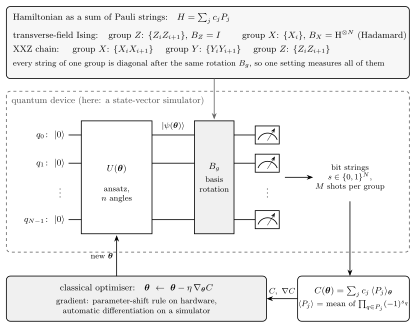
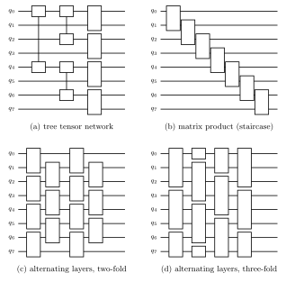
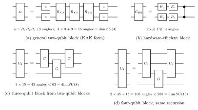
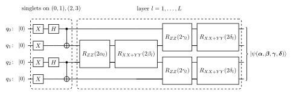
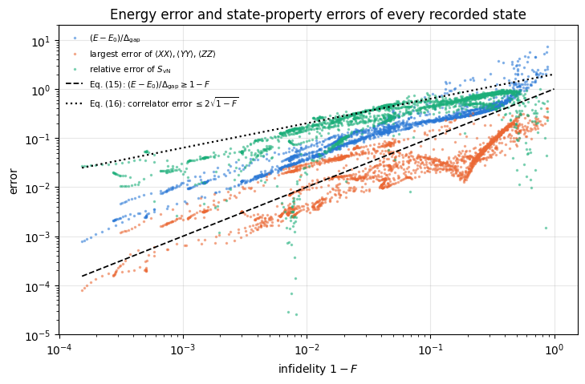
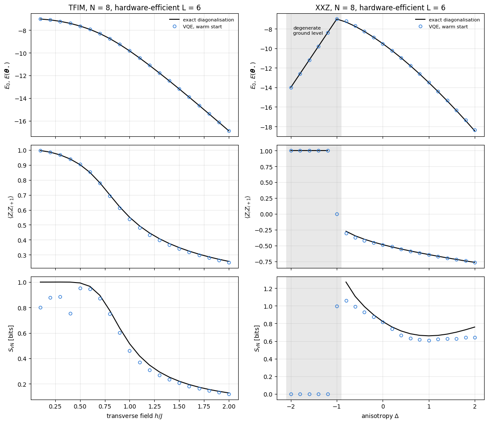

Finding the ground state of a Hamiltonian, and its energy, is one of the most frequent tasks of many-body physics and quantum chemistry. The ground state decides whether a magnet orders, whether a molecule binds and where a phase transition sits, and its energy, differentiated with respect to the couplings, gives magnetisations and forces.
Exact diagonalisation answers the question for small systems and then stops, because a state of \(N\) spins-\(1/2\) has \(2^N\) amplitudes. Notebook 11 measured this wall in its Section 14: with a matrix-free Lanczos solver one application of the Hamiltonian of a critical Ising chain took a fraction of a millisecond at \(N=10\) and a few tenths of a second at \(N=20\), a Krylov basis of \(80\) vectors needs \(1.3\) GB at \(N=20\), where the dense Hamiltonian would need \(17.6\) terabytes, and the \(N=20\) ground state took between half a minute and a minute and a half of wall time, depending on the load of the machine. Every added spin doubles the memory, and from \(N\approx14\) on it roughly doubles the time.
Matrix product states push the limit much further for a large and important class of states. Notebook 18 builds them (Sections 2 and 3) and runs DMRG on chains of a hundred spins (Section 6.9). They work because ground states of gapped one-dimensional Hamiltonians obey an area law: the entanglement entropy across a cut stays bounded as the chain grows (Eisert, Cramer and Plenio, 2010), so a modest bond dimension suffices. The cost rises whenever the entanglement grows. At a critical point the entropy grows logarithmically with the system size, which is still manageable in one dimension; after a global quench it grows linearly in time, volume-law states cannot be compressed at all, and a two-dimensional lattice snaked into a chain needs a bond dimension exponential in its width (notebook 18, Section 12).
The variational quantum eigensolver (VQE) uses a representation of a different kind. A parametrised quantum circuit \(U(\boldsymbol\theta)\) prepares a trial state \(\vert\psi(\boldsymbol\theta)\rangle=U(\boldsymbol\theta) \vert0\rangle^{\otimes N}\) on a quantum device, so the state exists physically and is never stored as a list of amplitudes. Its energy is estimated from repeated measurements, and a classical optimiser adjusts the angles \(\boldsymbol\theta\) to lower it (Peruzzo et al., 2014). Reviews of the method and its variants are given by Cerezo et al. (2021, Nat. Rev. Phys.) and Tilly et al. (2022). On the classical simulator of this course we pay the \(2^N\) cost ourselves, which is why every chain in this notebook has at most ten spins; the method is meant for hardware on which the circuit runs natively. What the simulator gives in return is the exact answer next to every variational one, and with it the possibility to see what the algorithm gets right and what it misses. Figure 1 shows the whole algorithm.

^N; for each commuting group of Pauli strings of H a basis rotation B_g is applied and all qubits are measured; the bit strings give the expectation values of the Pauli strings, which combine into the cost C(theta); a classical optimiser updates theta with the gradient and feeds it back into the circuit"> Figure 1. The variational quantum eigensolver. The circuit \(U(\boldsymbol\theta)\) prepares the trial state. The Hamiltonian is a weighted sum of Pauli strings, \(H=\sum_jc_jP_j\); strings that become diagonal after the same single-qubit basis rotation \(B_g\) form a group, and one measurement setting yields all of them. For the two chains of this notebook two settings (\(Z\) and \(X\)) or three (\(X\), \(Y\), \(Z\)) suffice. The measured averages combine into the cost \(C(\boldsymbol\theta)=\sum_jc_j\langle P_j\rangle_{\boldsymbol\theta}\), and the optimiser returns new angles.
Road map. Section 3 states the variational principle and the training step. Section 4 introduces the two Hamiltonians, the transverse-field Ising chain and the XXZ chain, writes them as Pauli strings, estimates their energy from simulated measurements and computes their exact ground states. Section 5 builds four circuit families from blocks. Section 6 assembles the training loop, and Section 7 trains every ansatz on three targets while recording the energy and the fidelity at every epoch, and the entanglement entropy, three magnetisations and three correlators every ten epochs, against the exact values. Section 8 compares the ansätze, Section 9 measures how the size of the gradient depends on the number of qubits, and Section 10 scans both phase diagrams.
What you will learn
Physics
the transverse-field Ising chain and the XXZ chain: their phases, symmetries and limiting cases, and their exact ground states at \(N=8\);
why a variational state can match the ground-state energy to a relative error of \(4\cdot10^{-4}\) and still have the wrong entanglement, the wrong magnetisation and a fidelity of one half;
how the structure of an ansatz (its symmetry, its light cone, its entanglement across a cut) decides what it can represent.
Numerical methods
estimating \(\langle H\rangle\) from bit strings in a few measurement bases, and the statistical error of the estimate;
block structures and block decompositions of circuits, and a general two-qubit block with fifteen angles;
training with automatic differentiation and Adam, statistics over random starts, and warm starts along a parameter scan;
the variance of a gradient component over random angles as a function of \(N\), and the number of measurements it implies.
Implementation practice
one compiled training program per ansatz, vmap-ed over Hamiltonians and random starts, with the Hamiltonian coefficients as traced arguments;
nested lax.scan loops that record cheap quantities at every epoch and expensive ones every ten epochs;
circuits of repeated layers written as a lax.scan over layers, which keeps the compilation time independent of the depth;
forward-mode differentiation (jax.jvp) for one gradient component over a thousand random angle vectors.
Prerequisites
11 — Hamiltonians and ground states: Hamiltonians as lists of local terms, the Lanczos ground state, and the physics of both chains (Sections 11 and 12);
40 — parametrised gates and gradients: rotation gates, the hardware-efficient and Hamiltonian-variational ansätze, the parameter-shift rule and barren plateaus;
The advanced questions of the method (rigorous relations between energy error and fidelity, symmetry leakage, depth studies, excited states by deflation, and optimisation under shot noise) are the subject of notebook 42.
Conventions. Qubit \(q\) is tensor axis \(q\), and \(\vert0\rangle\) is the \(+1\) eigenstate of \(Z\). Hamiltonians are written with Pauli matrices \(X,Y,Z\), never with spin-\(1/2\) operators. The main chain length is \(N=8\).
Configuration
Every notebook of this course starts with the same cell. Choose where to run (DEVICE) and the floating-point precision (PRECISION): "double" = float64/complex128 (default, recommended for physics), "single" = float32/complex64 (half the memory, faster on consumer GPUs, but watch the round-off). All code below derives its dtypes from RDTYPE/CDTYPE and its check tolerances from TOL, so nothing else needs to change.
Code
# ==============================================================================# CONFIGURATION -- adapt to your hardware, then run the notebook top to bottom# ==============================================================================DEVICE ="auto"# "auto": use a GPU if JAX finds one, else CPU | "cpu" | "gpu"PRECISION ="double"# "double": float64/complex128 | "single": float32/complex64import osif DEVICE =="cpu": os.environ["JAX_PLATFORMS"] ="cpu"# must be set BEFORE jax is importedimport stringfrom functools import partialimport mathimport numpy as npimport jaximport jax.numpy as jnpfrom jax import lax# Precision is configurable: "double" = float64/complex128 (default; needed for long time evolutions and# tight validation), "single" = float32/complex64 (half the memory, faster on consumer GPUs).# In a notebook PRECISION is defined in the Configuration cell; for this module use the env var QE_PRECISION.PRECISION =globals().get("PRECISION", os.environ.get("QE_PRECISION", "double"))jax.config.update("jax_enable_x64", PRECISION =="double")RDTYPE = jnp.float64 if PRECISION =="double"else jnp.float32 # real dtypeCDTYPE = jnp.complex128 if PRECISION =="double"else jnp.complex64 # complex dtype of all states/operatorsTOL =1e-10if PRECISION =="double"else1e-4# tolerance for sanity checks (asserts)_LETTERS = string.ascii_letters # the 52 einsum index labels a-z, A-Zimport timeimport matplotlib.pyplot as pltif DEVICE =="gpu"and jax.default_backend() =="cpu":print("WARNING: DEVICE='gpu' requested but JAX found no GPU -- running on CPU.")print(f"JAX {jax.__version__} | backend: {jax.default_backend()} | devices: {jax.devices()}")print(f"precision: {PRECISION} -> real {RDTYPE.__name__}, complex {CDTYPE.__name__}, check tolerance TOL={TOL:g}")
JAX 0.11.0 | backend: cpu | devices: [CpuDevice(id=0)]
precision: double -> real float64, complex complex128, check tolerance TOL=1e-10
2. Engine recap and notebook helpers
From the engine we take the gates and their application, the hardware-efficient ansatz, the Hamiltonian machinery (heisenberg_terms, energy, dense_hamiltonian, lanczos_ground_state), the state characteristics (entanglement_entropy, fidelity_pure, all_local_expectations, expect_pauli_string), the measurement sampler sample_bitstrings (used once, as a cross-check of the sampler of Section 4.3) and haar_unitary for the random-circuit reference of Section 9.
Engine recap — the simulator primitives used in this notebook (click to expand)
# ==============================================================================# ENGINE RECAP: the functions of quantum_engine.py (SmoQ.jax) used in this notebook.# Each one is derived, with its mathematics and an independent check, in notebook 08b# (Chapter 3), 'Building the quantum simulator engine'.# States are rank-N tensors of shape (2,)*N; every operator acts through ONE einsum.# ==============================================================================# ----------------------------------------------------------------------------# 1. Elementary matrices: Paulis, Clifford generators, rotations# ----------------------------------------------------------------------------I2 = jnp.eye(2, dtype=CDTYPE)X = jnp.array([[0, 1], [1, 0]], dtype=CDTYPE)Y = jnp.array([[0, -1j], [1j, 0]], dtype=CDTYPE)Z = jnp.array([[1, 0], [0, -1]], dtype=CDTYPE)H = jnp.array([[1, 1], [1, -1]], dtype=CDTYPE) / jnp.sqrt(2.0) # Hadamard: Z-basis <-> X-basisS = jnp.array([[1, 0], [0, 1j]], dtype=CDTYPE) # phase gate, S^2 = ZSDG = S.conj().TPAULI = {"I": I2, "X": X, "Y": Y, "Z": Z}CNOT = jnp.array([[1, 0, 0, 0], [0, 1, 0, 0], [0, 0, 0, 1], [0, 0, 1, 0]], dtype=CDTYPE)CZ = jnp.diag(jnp.array([1, 1, 1, -1], dtype=CDTYPE))XX = jnp.kron(X, X)YY = jnp.kron(Y, Y)ZZ = jnp.kron(Z, Z)def rx(theta):"""Rotation about x: Rx(theta) = exp(-i theta X/2) = cos(theta/2) 1 - i sin(theta/2) X. Derivation: for any operator with P^2 = 1 the exponential series splits into even/odd parts, exp(-i a P) = cos(a) 1 - i sin(a) P. Here a = theta/2. `theta` may be a traced JAX scalar, so the gate is differentiable (jax.grad) and jit-able. """ c, s = jnp.cos(theta /2), jnp.sin(theta /2)return jnp.array([[c, -1j* s], [-1j* s, c]], dtype=CDTYPE)def ry(theta):"""Rotation about y: Ry(theta) = exp(-i theta Y/2) = [[cos, -sin], [sin, cos]](theta/2) (real matrix).""" c, s = jnp.cos(theta /2), jnp.sin(theta /2)return jnp.array([[c, -s], [s, c]], dtype=CDTYPE)def rz(theta):"""Rotation about z: Rz(theta) = exp(-i theta Z/2) = diag(e^{-i theta/2}, e^{+i theta/2}).""" e = jnp.exp(-0.5j* theta)return jnp.array([[e, 0], [0, jnp.conj(e)]], dtype=CDTYPE)def rpp(theta, PP):"""Two-qubit Pauli rotation exp(-i theta PP/2) for any product PP of two Pauli matrices (XX, YY, ZZ, XY, ...). Because (P x Q)^2 = 1 the same closed form as for single-qubit rotations holds: exp(-i theta PP/2) = cos(theta/2) 1_4 - i sin(theta/2) PP. These are the native entangling gates of trapped ions (XX) and the building blocks of Trotterised spin-chain evolution. """return jnp.cos(theta /2) * jnp.eye(4, dtype=CDTYPE) -1j* jnp.sin(theta /2) * PPdef rxx(theta):"""exp(-i theta X(x)X / 2)."""return rpp(theta, XX)def ryy(theta):"""exp(-i theta Y(x)Y / 2)."""return rpp(theta, YY)def rzz(theta):"""exp(-i theta Z(x)Z / 2) -- diagonal: diag(e^{-i t/2}, e^{+i t/2}, e^{+i t/2}, e^{-i t/2})."""return rpp(theta, ZZ)# ----------------------------------------------------------------------------# 2. THE core primitive: a k-qubit operator acting on a tensor through ONE einsum# ----------------------------------------------------------------------------def apply_gate(psi, U, qubits):"""Apply a k-qubit operator U to the axes `qubits` of the tensor `psi`. MATH ---- One qubit (k=1), target q: psi'[s_0,..,a,..,s_{N-1}] = sum_b U[a,b] psi[s_0,..,b,..,s_{N-1}] Two qubits (k=2), targets (q1,q2); the 4x4 matrix is reshaped to U[a1,a2,b1,b2]: psi'[.., a1, .., a2, ..] = sum_{b1,b2} U[a1,a2,b1,b2] psi[.., b1, .., b2, ..] This IS the action of (1 x .. x U x .. x 1) -- written without ever building it. EINSUM TRANSLATION (generated automatically below) ------------------ N=3, q=1 : "db,abc->adc" d = new (output) index of qubit 1 N=4, q=(1,3) : "efbd,abcd->aecf" e,f = new indices of qubits 1 and 3 Recipe: label the axes of psi with letters a,b,c,...; give every target qubit a NEW letter (the next unused ones); U carries (new letters)+(old letters of the targets); the output is psi's labels with the target letters replaced by the new ones. IMPLEMENTATION NOTES -------------------- * reshape of U: (2^k,2^k) -> (2,)*2k. Row index = (a1..ak), column = (b1..bk), and the FIRST qubit in `qubits` is the most significant bit of the small matrix, i.e. it corresponds to the LEFT factor of kron(A,B). * `qubits` may be any distinct axes in any order: non-neighbouring gates cost the same. * U need not be unitary: projectors, Kraus operators and Hamiltonian terms reuse this. * psi may be ANY tensor with those axes of size 2: a state (rank N), a density tensor (rank 2N: ket axes 0..N-1, bra axes N..2N-1), ... COST O(2^k * 2^N) operations, O(2^N) memory (dense matrix: O(4^N) both). JAX `qubits` must be static Python ints (they define the einsum string); psi and U are traced, so the function can sit inside jit / grad / vmap / scan. """ qubits =tuple(int(q) for q in qubits) k, n =len(qubits), psi.ndim U = jnp.asarray(U, dtype=psi.dtype).reshape((2,) * (2* k)) # matrix -> rank-2k tensor inp =list(_LETTERS[:n]) # labels of psi's axes new = _LETTERS[n:n + k] # fresh labels for the outputs out = inp.copy()for a, q inzip(new, qubits): out[q] = a # target axes get the new labels sub =f"{''.join(new)}{''.join(inp[q] for q in qubits)},{''.join(inp)}->{''.join(out)}"return jnp.einsum(sub, U, psi)# ----------------------------------------------------------------------------# 3. State preparation# ----------------------------------------------------------------------------def zero_state(N):"""|00...0>: a rank-N tensor of zeros with a single 1 at index (0,0,...,0). JAX arrays are immutable: `.at[idx].set(v)` returns an updated COPY (functional style)."""return jnp.zeros((2,) * N, dtype=CDTYPE).at[(0,) * N].set(1.0)def haar_state(key, N):"""Haar-random pure state: a complex Gaussian vector, normalised. (The Gaussian measure is unitarily invariant, so the direction is uniformly distributed.) `key` is an explicit JAX PRNG key -- same key, same state: reproducible science.""" k1, k2 = jax.random.split(key) v = jax.random.normal(k1, (2,) * N) +1j* jax.random.normal(k2, (2,) * N)return (v / jnp.linalg.norm(v)).astype(CDTYPE)# ----------------------------------------------------------------------------# 4. Reduced density matrices & observables (matrix-free)# ----------------------------------------------------------------------------def rdm(psi, keep):"""Reduced density matrix of the qubits `keep` from a PURE state: rho_A = Tr_B |psi><psi|. MATH rho_A[a, a'] = sum_{b} psi[a, b] psi^*[a', b] (a: indices of A, b: of the rest B) EINSUM TRANSLATION N=3, keep=(0,): "abc,Abc->aA" with operands psi, psi^* * letters of B (b,c) appear in BOTH operands and not in the output -> summed = traced out * the kept axis gets a different letter in the second operand -> stays open (a and A) The full |psi><psi| (4^N numbers) is never formed; cost O(2^N 2^|A|). Returns a (2^|A|, 2^|A|) matrix with row/column order following `keep`. """ keep =tuple(int(q) for q in keep) n, k = psi.ndim, len(keep) a =list(_LETTERS[:n]) b = a.copy()for new, q inzip(_LETTERS[n:n + k], keep): b[q] = new sub =f"{''.join(a)},{''.join(b)}->{''.join(a[q] for q in keep)}{''.join(b[q] for q in keep)}"return jnp.einsum(sub, psi, jnp.conj(psi)).reshape(2** k, 2** k)def apply_pauli_string(psi, ops):"""Apply a Pauli string P = P_0 x P_1 x ... to psi. `ops` is a dict {qubit: 'X'|'Y'|'Z'} or a string like 'XIZY' (one letter per qubit; 'I' skipped). N single-qubit einsums -- cost O(N 2^N) -- instead of one 2^N x 2^N matrix."""ifisinstance(ops, str): ops = {q: p for q, p inenumerate(ops) if p !="I"}for q, p in ops.items(): psi = apply_gate(psi, PAULI[p], [q])return psidef expect_pauli_string(psi, ops):"""<psi|P|psi> = <psi | (P psi)> : apply the string, then ONE inner product (jnp.vdot conjugates its first argument). Works for strings of any weight, e.g. the N-body correlator <X X ... X>."""return jnp.real(jnp.vdot(psi, apply_pauli_string(psi, ops)))def all_local_expectations(psi):"""Bloch vectors of all qubits: array (N,3) with rows (<X_q>, <Y_q>, <Z_q>), from the 1-qubit RDMs.""" out = []for q inrange(psi.ndim): r = rdm(psi, [q]) out.append(jnp.stack([jnp.real(jnp.trace(r @ P)) for P in (X, Y, Z)]))return jnp.stack(out)# ----------------------------------------------------------------------------# 5. State characteristics: entropies, fidelity, negativity# ----------------------------------------------------------------------------def schmidt_values(psi, subsystem):"""Schmidt coefficients of the bipartition A|B with A = `subsystem`. MATH Group the tensor axes into a matrix M[(a),(b)] = psi[a,b] of shape (2^|A|, 2^|B|). Its SVD M = U diag(lambda) V^dag IS the Schmidt decomposition |psi> = sum_k lambda_k |u_k>_A |v_k>_B , rho_A has eigenvalues lambda_k^2. IMPLEMENTATION transpose (A axes first) -> reshape -> svd. No density matrix needed. """ A =tuple(int(q) for q in subsystem) B =tuple(q for q inrange(psi.ndim) if q notin A) M = jnp.transpose(psi, A + B).reshape(2**len(A), -1)return jnp.linalg.svd(M, compute_uv=False)def entanglement_entropy(psi, subsystem, base=2.0):"""Entanglement entropy S_A = -sum_k p_k log p_k with p_k = lambda_k^2 (squared Schmidt values). Product state: 0. Bell/GHZ across any cut: 1 bit. Random state: ~ |A| - 1/(2 ln2) 2^{|A|-|B|} (Page).""" p = jnp.clip(schmidt_values(psi, subsystem) **2, 1e-16, None)return-jnp.sum(p * jnp.log(p)) / jnp.log(base)def fidelity_pure(psi, phi):"""F = |<psi|phi>|^2 between two pure states."""return jnp.abs(jnp.vdot(psi, phi)) **2# ----------------------------------------------------------------------------# 6. Measurements (Born rule, collapse, sampling)# ----------------------------------------------------------------------------_BASIS_ROT = {"Z": I2, "X": H, "Y": H @ SDG} # U maps the eigenbasis of the Pauli to |0>,|1>: P = U^dag Z Udef sample_bitstrings(key, psi, shots, bases=None):"""Sample `shots` outcomes of measuring ALL qubits (no collapse bookkeeping needed). MATH p(s) = |psi[s]|^2 ; optional per-qubit bases string like 'XZY' rotates first. IMPLEMENTATION `jax.random.categorical` draws flat indices from log-probabilities; the bits are unpacked with shifts: s_q = (i >> (N-1-q)) & 1 (qubit 0 = most significant bit). Returns an int array of shape (shots, N). """ N = psi.ndimif bases isnotNone:for q, b inenumerate(bases): psi = apply_gate(psi, _BASIS_ROT[b], [q]) logp = jnp.log(jnp.clip(jnp.abs(psi.reshape(-1)) **2, 1e-300, None)) idx = jax.random.categorical(key, logp, shape=(shots,))return (idx[:, None] >> jnp.arange(N -1, -1, -1)[None, :]) &1# ----------------------------------------------------------------------------# 8. Hamiltonians as lists of local terms; H|psi> matrix-free# ----------------------------------------------------------------------------def heisenberg_terms(N, Jxx=1.0, Jyy=1.0, Jzz=1.0, hx=0.0, hy=0.0, hz=0.0, periodic=False, bonds=None):"""Spin-1/2 Hamiltonian in Pauli convention H = sum_<ij> (Jxx X_i X_j + Jyy Y_i Y_j + Jzz Z_i Z_j) + sum_i (hx X_i + hy Y_i + hz Z_i) returned as a LIST of local terms [(qubits, small_matrix), ...] -- this list *is* our Hamiltonian. Heisenberg: Jxx=Jyy=Jzz XXZ: Jxx=Jyy!=Jzz XY: Jzz=0 TFIM: only Jzz and hx. `bonds` overrides the default open chain (any graph: ladders, 2D lattices, all-to-all, ...)."""if bonds isNone: bonds = [(i, i +1) for i inrange(N -1)] + ([(N -1, 0)] if periodic and N >2else []) terms = [((i, j), Jxx * XX + Jyy * YY + Jzz * ZZ) for (i, j) in bonds]if hx !=0or hy !=0or hz !=0: terms += [((i,), hx * X + hy * Y + hz * Z) for i inrange(N)]return termsdef apply_hamiltonian(terms, psi):"""H|psi> = sum_k h_k|psi>, every term applied with `apply_gate` (h_k is Hermitian, not unitary -- the einsum does not care). Cost O(#terms * 2^N). This matrix-vector product is ALL that Lanczos, Chebyshev and Krylov methods need, which is why they scale to N ~ 25-30.""" out = jnp.zeros_like(psi)for qubits, h in terms: out = out + apply_gate(psi, h, qubits)return outdef energy(terms, psi):"""<psi|H|psi> = Re <psi | (H psi)>."""return jnp.real(jnp.vdot(psi, apply_hamiltonian(terms, psi)))def dense_hamiltonian(terms, N):"""Dense 2^N x 2^N matrix for VALIDATION on small N -- built from the matrix-free action: column j of H is H|e_j>. `jax.vmap` applies H to all basis vectors at once.""" eye = jnp.eye(2** N, dtype=CDTYPE).reshape((2** N,) + (2,) * N) cols = jax.vmap(lambda e: apply_hamiltonian(terms, e).reshape(-1))(eye)return cols.T# ----------------------------------------------------------------------------# 9. Time evolution: TEBD / Trotter-Suzuki, Chebyshev, Krylov, exact# ----------------------------------------------------------------------------def lanczos(matvec, v0, m=60, reorth=True):"""m-step Lanczos iteration: orthonormal basis V of the Krylov space span{v, Hv, H^2 v, ...} in which H is TRIDIAGONAL: T = V^dag H V = tridiag(beta, alpha, beta). Recurrence w = H v_j - alpha_j v_j - beta_{j-1} v_{j-1}, alpha_j = <v_j|H|v_j>, beta_j = ||w||. `reorth=True` re-orthogonalises against all previous vectors (cures the loss of orthogonality of floating-point Lanczos at the price of O(m^2) inner products). Only `matvec` (H|psi>) is needed -> matrix-free. Returns (alphas, betas, V[m, 2,..,2]). """ v = v0 / jnp.linalg.norm(v0) V, alphas, betas = [v], [], [] w = matvec(v)for j inrange(m): a = jnp.real(jnp.vdot(V[j], w)) alphas.append(a) w = w - a * V[j] - (betas[-1] * V[j -1] if j >0else0.0)if reorth:for u in V: w = w - jnp.vdot(u, w) * u b = jnp.linalg.norm(w)if j == m -1orfloat(b) <1e-12:break betas.append(b) V.append(w / b) w = matvec(V[-1])return np.array(alphas, dtype=float), np.array(betas, dtype=float), jnp.stack(V)def lanczos_ground_state(terms, N, m=80, key=None, restarts=3):"""Ground state (E_0, |psi_0>) from restarted Lanczos: diagonalise the small T, map its lowest eigenvector back with V, use it as the next start vector. Extremal eigenvalues converge first.""" key = jax.random.PRNGKey(0) if key isNoneelse key v = haar_state(key, N) mv = jax.jit(lambda p: apply_hamiltonian(terms, p)) E =Nonefor _ inrange(restarts): a, b, V = lanczos(mv, v, m) w, S_ = np.linalg.eigh(np.diag(a) + np.diag(b, 1) + np.diag(b, -1)) v = jnp.tensordot(jnp.asarray(S_[:, 0], dtype=CDTYPE), V, axes=1) v = v / jnp.linalg.norm(v) E = w[0]returnfloat(E), v# ----------------------------------------------------------------------------# 12. Random unitaries, Clifford group, brick-wall circuits# ----------------------------------------------------------------------------def haar_unitary(key, d):"""Haar-random d x d unitary (Mezzadri's recipe): QR-decompose a complex Ginibre matrix and fix the phases of R's diagonal -- without the phase fix the distribution is NOT Haar.""" k1, k2 = jax.random.split(key) G = (jax.random.normal(k1, (d, d)) +1j* jax.random.normal(k2, (d, d))) / jnp.sqrt(2.0) Q, R = jnp.linalg.qr(G) ph = jnp.diagonal(R) / jnp.abs(jnp.diagonal(R))return Q * ph[None, :]# ----------------------------------------------------------------------------# 15. Variational circuits: ansatz, gradients, optimizers# ----------------------------------------------------------------------------def hea_num_params(N, layers):"""Number of angles of `hardware_efficient_ansatz`: (layers+1) rotation blocks x N qubits x 2 angles."""return2* N * (layers +1)def hardware_efficient_ansatz(theta, N, layers, entangler=CZ, periodic=False):"""Hardware-efficient ansatz |psi(theta)> = R(theta_L) * prod_{l<L} [ ENT * R(theta_l) ] |0...0>, R = prod_q Rz(.) Ry(.), ENT = a chain of CZ (or any 2-qubit gate). `theta` is a flat vector of length 2N(L+1). The function is a pure map theta -> state, hence jit-able and differentiable end to end.""" theta = theta.reshape(layers +1, N, 2) psi = zero_state(N)for l inrange(layers +1):for q inrange(N): psi = apply_gate(psi, ry(theta[l, q, 0]), [q]) psi = apply_gate(psi, rz(theta[l, q, 1]), [q])if l < layers:for q inrange(N -1): psi = apply_gate(psi, entangler, [q, q +1])if periodic and N >2: psi = apply_gate(psi, entangler, [N -1, 0])return psi
Code
# ==============================================================================# PLOT STYLE and small statistics helpers# ==============================================================================PALETTE = ["#2a78d6", "#eb6834", "#1baf7a", "#eda100", "#e87ba4", "#4a3aa7"] # colour-blind-friendly, fixed orderMARKERS = ["o", "s", "^", "D", "v", "P"]plt.rcParams.update({"axes.prop_cycle": plt.cycler(color=PALETTE), "axes.grid": True,"grid.alpha": 0.3, "font.size": 10, "legend.frameon": False})T_START = time.perf_counter() # wall clock of the whole notebookdef bands(hist):"""Lower quartile, median and upper quartile over the first axis (the random starts).""" h = np.asarray(hist)return np.percentile(h, 25, axis=0), np.median(h, axis=0), np.percentile(h, 75, axis=0)def epochs_to(hist, target):"""First epoch at which each run's value falls below `target`; -1 if it never does. hist: (runs, epochs).""" below = np.asarray(hist) < targetreturn np.where(below.any(axis=1), np.argmax(below, axis=1), -1)def var_with_error(g):"""Sample variance of g and its standard error sqrt((mu_4 - Var^2)/R), valid for non-Gaussian samples.""" g = np.asarray(g) d = g - g.mean() v =float(np.mean(d **2))return v, float(np.sqrt((np.mean(d **4) - v **2) / g.size))
3. The variational principle and the training step
3.1 Every trial state is an upper bound
Let \(H\) have eigenvalues \(E_0\le E_1\le\dots\) with orthonormal eigenvectors \(\vert n\rangle\), and expand a normalised trial state as \(\vert\psi\rangle=\sum_nc_n\vert n\rangle\) with \(\sum_n\lvert c_n\rvert^2=1\). Then
because every \(E_n\ge E_0\) and the weights are non-negative and sum to one. Equality holds only when all the weight lies in the ground eigenspace. This is the Rayleigh-Ritz variational principle. It turns the eigenvalue problem into a minimisation over any family of trial states, and it gives a free test of every implementation: a computed energy below \(E_0\) is a bug. How the energy error relates to the error of the state is derived in notebook 42, Section 3; Section 7.3 below uses one of its results.
3.2 The parametrised circuit and the cost
The family of trial states is produced by a circuit,
a product of gates whose rotation angles are the \(n\) entries of \(\boldsymbol\theta\). The choice of the gates is the ansatz (Section 5). The cost is the energy of the trial state,
and the VQE solves \(\boldsymbol\theta_\star=\arg\min_{\boldsymbol\theta}E(\boldsymbol\theta)\). Figure 2 is the loop of any variational quantum algorithm: the device returns the cost, the classical computer returns new angles. The VQE is the case in which the measured observable is the Hamiltonian.
Figure 2. The hybrid loop of a variational quantum algorithm. For the VQE the observable is \(\hat O=H\) and the cost is Eq. (3).
for every group of commuting Pauli strings, rotate into the group’s basis, measure all qubits \(M\) times, and average the strings over the bit strings;
add up \(C(\boldsymbol\theta)=\sum_jc_j\langle P_j\rangle_{\boldsymbol\theta}\);
estimate the gradient \(\nabla_{\boldsymbol\theta}C\), for example by the parameter-shift rule, which needs two more cost evaluations per angle (notebook 40, Section 8);
On the state-vector simulator of this notebook steps 2 and 3 are replaced by the exact value \(\langle\psi\vert H\vert\psi\rangle\), computed by applying the term list of \(H\) to the state, and step 4 by reverse-mode automatic differentiation through the whole circuit. Section 4.3 checks that the measurement route of steps 2 and 3 reproduces the exact value within its statistical error, so that the rest of the notebook can use the exact value and isolate what the ansatz and the optimiser do.
The coupling favours neighbouring spins that are aligned along \(z\), the transverse field favours every spin pointing along \(+x\), and the two terms do not commute. Their competition is the simplest quantum phase transition.
Limits. At \(h=0\) the Hamiltonian is classical; its two ground states are \(\vert0\cdots0\rangle\) and \(\vert1\cdots1\rangle\) with \(E=-(N-1)J\). At \(J=0\) the ground state is the product state \(\vert+\rangle^{\otimes N}\) with \(E=-Nh\).
Symmetry. The parity \(P=\prod_qX_q\) commutes with \(H_{\mathrm{TFIM}}\): it commutes with every \(X_i\), and with \(Z_iZ_{i+1}\) because it anticommutes with each of the two factors. It flips every spin along \(z\), so it maps the two classical ground states onto each other.
Phases. In the thermodynamic limit the chain is a ferromagnet along \(z\) for \(h<J\) and a paramagnet polarised along \(x\) for \(h>J\), with a continuous transition at \(h=J\) (Pfeuty, 1970). The ferromagnet breaks the parity symmetry. A finite chain cannot break it: its ground state in the ordered regime is the even superposition of the two ordered states, a cat state with one bit of entanglement across any cut, and its odd partner lies above it by a splitting that shrinks exponentially with \(N\).
Gap. The model maps to free fermions by a Jordan-Wigner transformation (Pfeuty, 1970). In the Pauli convention of Eq. (4) the single-fermion energies of the infinite chain are \(2\sqrt{J^2+h^2-2Jh\cos k}\), whose minimum gives the bulk gap
which closes at the critical point. On a finite open chain the lowest gap also contains the edge physics: in the ordered regime it is the exponentially small doublet splitting, and \(2\lvert h-J\rvert\) is close to the distance to the next level.
Magnetisation from the energy. The Hellmann-Feynman theorem, \(\partial E_0/\partial h=\langle\psi_0\vert\partial H/\partial h\vert\psi_0\rangle\), gives
so the transverse magnetisation follows from the slope of the ground-state energy, which a VQE scan provides.
We use three TFIM targets: the critical point \(h=J=1\), the ordered regime \(h=0.5\), and, in Section 10, a scan of \(h\). The engine writes Eq. (4) as heisenberg_terms(N, Jxx=0, Jyy=0, Jzz=-J, hx=-h), the convention of notebook 11.
The \(XX+YY\) part exchanges neighbouring up and down spins, \(X_iX_{i+1}+Y_iY_{i+1}=2\bigl(\sigma^+_i\sigma^-_{i+1} +\sigma^-_i\sigma^+_{i+1}\bigr)\) with \(\sigma^\pm=(X\pm iY)/2\) (\(\sigma^-=|1\rangle\langle0|\) lowers spin up \(|0\rangle\) to spin down \(|1\rangle\)), and the anisotropy \(\Delta\) weights the Ising part.
Symmetries. The total magnetisation \(S^z_{\mathrm{tot}}=\sum_qZ_q\) is conserved, because the exchange term only moves a flipped spin and \(Z_iZ_{i+1}\) is diagonal: the Hamiltonian has a \(U(1)\) symmetry and is block diagonal in sectors of fixed \(S^z_{\mathrm{tot}}\). The parity \(P=\prod_qX_q\) also commutes with it (each bond term contains two equal Pauli operators). At \(\Delta=1\) the model is the isotropic antiferromagnetic Heisenberg chain and has the full \(SU(2)\) spin-rotation symmetry; for even \(N\) its ground state is a total-spin singlet.
Limits. At \(\Delta=0\) it is the XX chain, which a Jordan-Wigner transformation maps to free fermions hopping on the chain with single-particle energies \(4J\cos\bigl(\pi k/(N+1)\bigr)\), \(k=1,\dots,N\), for open boundaries; the ground state fills all negative levels. For \(\Delta\to+\infty\) the two Néel states \(\vert0101\cdots\rangle\) and \(\vert1010\cdots\rangle\) become the ground states; for \(\Delta\to-\infty\) the two ferromagnetic states \(\vert0\cdots0\rangle\) and \(\vert1\cdots1\rangle\).
Phases. In the thermodynamic limit, \(\Delta<-1\) is a ferromagnet along \(z\); \(-1<\Delta\le1\) is a critical phase (a Tomonaga-Luttinger liquid) with no gap and power-law correlations; \(\Delta>1\) is a gapped Néel antiferromagnet. The transition at \(\Delta=-1\) is first order: the fully polarised states are exact eigenstates with energy \((N-1)J\Delta\) for every \(\Delta\), and they cross the bottom of the \(S^z_{\mathrm{tot}}=0\) spectrum. The transition at \(\Delta=1\) is of the Berezinskii-Kosterlitz-Thouless type, with a gap that opens exponentially slowly, so it leaves almost no trace in small-chain energies. Notebook 11, Section 12, studies these phases with Lanczos.
The main XXZ target is the Heisenberg point \(\Delta=1\); Section 10 scans \(\Delta\).
4.3 Pauli strings and measurement in a few bases
Both Hamiltonians are already sums of Pauli strings, Eq. (4) with \(2N-1\) strings and Eq. (7) with \(3(N-1)\):
A device measures every qubit in the \(Z\) basis and returns a bit \(s_q\in\{0,1\}\), the outcome \((-1)^{s_q}\) of \(Z_q\). A product of \(Z\) operators is therefore measured by multiplying the outcomes: one shot gives \(Z_iZ_{i+1}\to(-1)^{s_i+s_{i+1}}\) for every bond at once. To measure \(X_q\) one first applies a Hadamard gate, which maps the eigenbasis of \(X\) to that of \(Z\); for \(Y_q\) the rotation is \(\mathrm{H}S^\dagger\). All strings that need the same rotation on every qubit form a group, measured together: the TFIM needs two settings (\(Z\) for the bonds, \(X\) for the field), the XXZ chain three (\(X\), \(Y\), \(Z\)). With \(M\) shots per setting and the per-shot value \(o_g(s)=\sum_{j\in g}c_jP_j(s)\) of group \(g\), the estimate and its standard error are
because the settings are measured independently and the shots within a setting are independent draws from the Born distribution. The function below implements Eq. (9) for one group: it rotates every qubit with \(B_g\), computes the Born distribution \(p(s)\) of the rotated state, draws \(M\) bit strings from it, and also returns the exact \(\sigma_g^2=\sum_sp(s)o_g(s)^2-\bigl(\sum_sp(s)o_g(s)\bigr)^2\). The checkpoint repeats the estimate many times on a test state, a one-layer hardware-efficient circuit (Section 5.3) at random angles whose exact energy is the column exact <H>, and compares the observed scatter with the predicted standard error.
Code
# ==============================================================================# STEP 1: the two Hamiltonians with traced coefficients, and energy estimation from shots# ==============================================================================N_SITES =8# main chain length (N <= 10 throughout)def model_terms(N, c):"""Term list of H = sum_i (c0 X_i X_{i+1} + c1 Y_i Y_{i+1} + c2 Z_i Z_{i+1}) + c3 sum_i X_i, open chain. MATH TFIM, Eq. (4): c = (0, 0, -J, -h) XXZ, Eq. (7): c = (J, J, J Delta, 0) IMPL one 4x4 bond matrix and one 2x2 field matrix whose ENTRIES may be traced: one compiled program then serves every model and every coupling (same layout as `heisenberg_terms`, which is checked below). """ bond = c[0] * XX + c[1] * YY + c[2] * ZZ field = c[3] * Xreturn [((i, i +1), bond) for i inrange(N -1)] + [((i,), field) for i inrange(N)]def tfim_c(h, J=1.0):"""Coefficient vector of Eq. (4)."""return jnp.asarray([0.0, 0.0, -J, -h], dtype=RDTYPE)def xxz_c(Delta, J=1.0):"""Coefficient vector of Eq. (7)."""return jnp.asarray([J, J, J * Delta, 0.0], dtype=RDTYPE)def group_values(bits, c, basis):"""Per-shot value o_g(s) of one measurement group, Eq. (9). bits: (shots, N) int array of 0/1. MATH outcome of a single-qubit Pauli in its own (rotated) basis: (-1)^s. group 'Z': c2 sum_i z_i z_{i+1}; 'Y': c1 sum_i y_i y_{i+1}; 'X': c0 sum_i x_i x_{i+1} + c3 sum_i x_i """ pm =1.0-2.0* bits # (-1)^s bond = jnp.sum(pm[:, :-1] * pm[:, 1:], axis=1)if basis =="Z":return c[2] * bondif basis =="Y":return c[1] * bondreturn c[0] * bond + c[3] * jnp.sum(pm, axis=1)def all_bitstrings(N):"""All 2^N bit strings in the engine's order (qubit 0 = most significant bit), shape (2^N, N).""" idx = jnp.arange(2** N)return (idx[:, None] >> jnp.arange(N -1, -1, -1)[None, :]) &1def groups_of(c):"""Measurement settings needed for coefficient vector c: a basis is skipped when all its coefficients vanish.""" c = np.asarray(c)return [b for b, used in (("X", c[0] !=0or c[3] !=0), ("Y", c[1] !=0), ("Z", c[2] !=0)) if used]_ROT = {"X": H, "Y": H @ jnp.diag(jnp.asarray([1, -1j], dtype=CDTYPE)), "Z": jnp.eye(2, dtype=CDTYPE)} # B_g per qubit@partial(jax.jit, static_argnames=("shots", "basis"))def group_estimate(key, psi, c, shots, basis):"""One measurement group of Eq. (9): (sample mean of o_g over `shots` bit strings, exact <o_g>, exact sigma_g^2). MATH p(s) = |<s| B_g^{(x)N} |psi>|^2, the Born distribution after the basis rotation; o_g(s) as in group_values IMPL o_g is evaluated once on all 2^N bit strings; the shots are drawn by inverse-transform sampling, jax.random.choice(..., p=p), which bisects the cumulative distribution: O(2^N + M N) work and an (M,) array. The engine's `sample_bitstrings` draws the same distribution with the Gumbel-max trick, which creates an (M, 2^N) array of random numbers. """ rot = psifor q inrange(psi.ndim): rot = apply_gate(rot, _ROT[basis], [q]) p = jnp.abs(rot.reshape(-1)) **2 o_all = group_values(all_bitstrings(psi.ndim), c, basis) # o_g of every bit string, shape (2^N,) idx = jax.random.choice(key, p.size, shape=(shots,), p=p) # flat indices of the measured bit strings mean = jnp.sum(p * o_all)return jnp.mean(o_all[idx]), mean, jnp.sum(p * o_all **2) - mean **2def estimate_energy(key, psi, c, shots):"""Shot-based estimate of <H>, Eq. (9). Returns (estimate, predicted standard error sqrt(sum_g sigma_g^2 / M)).""" groups = groups_of(c) out = [group_estimate(k, psi, c, shots, b) for k, b inzip(jax.random.split(key, len(groups)), groups)]returnfloat(sum(o[0] for o in out)), float(np.sqrt(sum(o[2] for o in out) / shots))# --- CHECKPOINT 1: the traced term list equals the engine's -----------------------------------------------------for c, kw in ((tfim_c(1.0), dict(Jxx=0.0, Jyy=0.0, Jzz=-1.0, hx=-1.0)), (xxz_c(1.0), dict(Jxx=1.0, Jyy=1.0, Jzz=1.0))): t_ours, t_eng = model_terms(N_SITES, c), heisenberg_terms(N_SITES, **kw) t_ours = [t for t in t_ours iffloat(jnp.max(jnp.abs(t[1]))) >0] # drop the zero field of XXZassertlen(t_ours) ==len(t_eng) andmax(float(jnp.max(jnp.abs(a[1] - b[1]))) for a, b inzip(t_ours, t_eng)) < TOLprint("CHECKPOINT 1: model_terms reproduces heisenberg_terms for both models")# --- CHECKPOINT 2: the shot estimate scatters as Eq. (9) predicts, on a random product-like test state ----------------psi_test = hardware_efficient_ansatz(jax.random.uniform(jax.random.PRNGKey(5), (hea_num_params(N_SITES, 1),), minval=-jnp.pi, maxval=jnp.pi), N_SITES, 1)N_REP =40print(f"\n{'model':>6s}{'settings':>9s}{'M':>7s}{'exact <H>':>10s}{'mean of est.':>13s}{'observed std':>13s} "f"{'predicted SE':>13s}{'ratio':>6s}")for name, c in (("TFIM", tfim_c(1.0)), ("XXZ", xxz_c(1.0))): E_exact =float(energy(model_terms(N_SITES, c), psi_test)) gs = groups_of(c)for M in (100, 1000, 10000): keys = jax.random.split(jax.random.PRNGKey(M), N_REP) one_rep =lambda k: sum(group_estimate(kg, psi_test, c, M, b)[0] for kg, b inzip(jax.random.split(k, len(gs)), gs)) ests = np.asarray(jax.vmap(one_rep)(keys)) # vmap over repetitions: (N_REP, M) indices only se = estimate_energy(keys[0], psi_test, c, M)[1] ratio = ests.std(ddof=1) / seprint(f"{name:>6s}{''.join(groups_of(c)):>9s}{M:7d}{E_exact:10.4f}{ests.mean():13.4f}{ests.std(ddof=1):13.4f} "f"{se:13.4f}{ratio:6.2f}")assertabs(ests.mean() - E_exact) <4* se / np.sqrt(N_REP) and0.6< ratio <1.4# --- the engine's Gumbel-max sampler and the inverse-transform sampler draw the same distribution ---------------------c, M = xxz_c(1.0), 4000bits = sample_bitstrings(jax.random.PRNGKey(11), psi_test, M, bases="Y"* N_SITES)m_inv, m_exact, v_y = (float(x) for x in group_estimate(jax.random.PRNGKey(12), psi_test, c, M, "Y"))m_eng =float(jnp.mean(group_values(bits, c, "Y")))print(f"\nY group of the XXZ chain, M = {M}: exact {m_exact:+.4f}, engine sampler {m_eng:+.4f}, inverse transform "f"{m_inv:+.4f}, standard error {np.sqrt(v_y / M):.4f}")assertmax(abs(m_eng - m_exact), abs(m_inv - m_exact)) <4* np.sqrt(v_y / M)
CHECKPOINT 1: model_terms reproduces heisenberg_terms for both models
model settings M exact <H> mean of est. observed std predicted SE ratio
TFIM XZ 100 -2.2504 -2.3875 0.4176 0.3909 1.07
TFIM XZ 1000 -2.2504 -2.2335 0.1137 0.1236 0.92
TFIM XZ 10000 -2.2504 -2.2509 0.0326 0.0391 0.83
XXZ XYZ 100 2.5691 2.5985 0.3887 0.4496 0.86
XXZ XYZ 1000 2.5691 2.5911 0.1301 0.1422 0.92
XXZ XYZ 10000 2.5691 2.5623 0.0464 0.0450 1.03
Y group of the XXZ chain, M = 4000: exact +0.3614, engine sampler +0.4300, inverse transform +0.3830, standard error 0.0440
The traced term list agrees with the engine’s heisenberg_terms entry by entry, so Eqs. (4) and (7) are implemented in the convention of notebook 11. The shot estimate is unbiased (the mean of forty repetitions lies within four standard errors of the mean of the exact value) and its scatter matches the prediction of Eq. (9) at every \(M\), with the ratio of observed to predicted standard deviation printed in the last column. The error falls as \(M^{-1/2}\): a hundred times more shots buy one more digit. The XXZ chain needs three settings instead of two, because its three kinds of bond terms do not commute with each other qubit by qubit.
Numerical practice. The engine’s sample_bitstrings draws with the Gumbel-max trick, one random number per shot and per bit string, an (M, 2^N) array: at \(M=10^4\) and \(N=8\) that is \(2.6\) million random numbers per setting, and a vmap over repetitions would multiply it again. Inverse-transform sampling builds the cumulative distribution once and needs one uniform number per shot, so here the forty repetitions are a single vmap. The last printed line checks that both samplers reproduce the exact mean of one group within four standard errors.
4.4 The exact ground states
The reference for everything that follows is exact diagonalisation. At \(N=8\) the Hamiltonian is a \(256\times256\) matrix, so we compute the full spectrum with dense eigh and, independently, the ground state with the engine’s matrix-free Lanczos solver. Two analytic limits test the term lists: the free-fermion energies of the open TFIM chain (the singular values \(s_k\) of the bidiagonal matrix with \(h\) on the diagonal and \(J\) above it give \(E_0=-\sum_ks_k\), as in notebook 11) and of the XX chain (\(\Delta=0\), the sum of the negative single-particle energies of Section 4.2). Equation (6) is checked by a finite difference of \(E_0(h)\).
For each target we record the quantities that Section 7 will follow during training: the half-chain von Neumann entropy \(S_{\mathrm{vN}}=-\mathrm{Tr}\,\rho_A\log_2\rho_A\) of the first \(N/2\) spins, the mean magnetisations \(\langle X\rangle=\frac1N\sum_q\langle X_q\rangle\) (and likewise \(\langle Y\rangle\), \(\langle Z\rangle\)), and the mean nearest-neighbour correlators \(\langle XX\rangle=\frac1{N-1}\sum_q\langle X_qX_{q+1}\rangle\) (and likewise).
Code
# ==============================================================================# STEP 2: exact diagonalisation of the three targets, analytic checks, Hellmann-Feynman# ==============================================================================OBS_NAMES = ["S_vN", "<X>", "<Y>", "<Z>", "<XX>", "<YY>", "<ZZ>"]OBS_TEX = [r"$S_{\rm vN}$ [bits]", r"$\langle X\rangle$", r"$\langle Y\rangle$", r"$\langle Z\rangle$",r"$\langle XX\rangle$", r"$\langle YY\rangle$", r"$\langle ZZ\rangle$"]@jax.jitdef observables(psi):"""(S_vN, <X>, <Y>, <Z>, <XX>, <YY>, <ZZ>) of a state tensor: the seven tracked state properties. MATH S_vN = -Tr rho_A log2 rho_A, A = first N/2 qubits; <X> = (1/N) sum_q <X_q>; <XX> = (1/(N-1)) sum_q <X_q X_{q+1}> (likewise for Y, Z) COST O(N 2^N); used inside the training scan. JAX jitted: an eager call dispatches some hundred small operations one by one, the compiled one is a single program (about 40 times faster per call at N = 8 once compiled). """ N = psi.ndim s_vn = entanglement_entropy(psi, range(N //2)) loc = all_local_expectations(psi) # (N, 3) corr = [jnp.mean(jnp.stack([expect_pauli_string(psi, {q: p, q +1: p}) for q inrange(N -1)])) for p in"XYZ"]return jnp.stack([s_vn, loc[:, 0].mean(), loc[:, 1].mean(), loc[:, 2].mean()] + corr)@partial(jax.jit, static_argnums=1)def model_matrix(c, N):"""Dense 2^N x 2^N matrix of the term list of coefficient vector c (validation only); compiled once per N."""return dense_hamiltonian(model_terms(N, c), N)def exact_ground_state(c, N=N_SITES):"""Dense eigh of the term list: (E_0, E_1, E_2, ground-state tensor).""" w, V = np.linalg.eigh(np.asarray(model_matrix(c, N)))returnfloat(w[0]), float(w[1]), float(w[2]), jnp.asarray(V[:, 0], dtype=CDTYPE).reshape((2,) * N)TARGETS = {"TFIM, h=1": tfim_c(1.0), "TFIM, h=0.5": tfim_c(0.5), "XXZ, Delta=1": xxz_c(1.0)}TARGET_NAMES =list(TARGETS)EXACT = {}print(f"{'target':>13s}{'E_0 (eigh)':>12s}{'Lanczos - eigh':>15s}{'E_1 - E_0':>10s}{'E_2 - E_0':>10s} "+" ".join(f"{n:>7s}"for n in OBS_NAMES))for name, c in TARGETS.items(): E0, E1, E2, psi0 = exact_ground_state(c) E0_l, psi0_l = lanczos_ground_state(model_terms(N_SITES, c), N_SITES, restarts=1) # m = 80 Krylov vectors, one passassertabs(E0_l - E0) <1e-8andabs(float(fidelity_pure(psi0, psi0_l / jnp.linalg.norm(psi0_l))) -1) <1e-6 o = np.asarray(observables(psi0)) EXACT[name] =dict(E0=E0, gap=E1 - E0, E2=E2, psi0=psi0, obs=o)print(f"{name:>13s}{E0:12.6f}{E0_l - E0:15.1e}{E1 - E0:10.5f}{E2 - E0:10.5f} "+" ".join(f"{v:+7.3f}"for v in o))# --- CHECKPOINT 3: free-fermion limits ---------------------------------------------------------------------------def tfim_free_fermion(N, J, h):"""E_0 and the lowest gap of the open TFIM of Eq. (4) from free fermions (notebook 11).""" s = np.linalg.svd(np.diag(np.full(N, float(h))) + np.diag(np.full(N -1, float(J)), 1), compute_uv=False)return-s.sum(), 2* s.min()for h in (0.5, 1.0, 2.0): E_ff, gap_ff = tfim_free_fermion(N_SITES, 1.0, h) E0, E1, _, _ = exact_ground_state(tfim_c(h))print(f"TFIM h={h}: free fermions E_0 = {E_ff:.10f}, ED - FF = {E0 - E_ff:.1e}; lowest gap {E1 - E0:.5f} "f"(FF {gap_ff:.5f}), bulk gap 2|h-J| = {2*abs(h -1):.3f}")assertabs(E0 - E_ff) <1e-9andabs((E1 - E0) - gap_ff) <1e-9eps_xx =4* np.cos(np.pi * np.arange(1, N_SITES +1) / (N_SITES +1))E0_xx = exact_ground_state(xxz_c(0.0))[0]print(f"XX chain (Delta=0): free fermions E_0 = {eps_xx[eps_xx <0].sum():.10f}, ED - FF = {E0_xx - eps_xx[eps_xx <0].sum():.1e}")assertabs(E0_xx - eps_xx[eps_xx <0].sum()) <1e-9# --- CHECKPOINT 4: Hellmann-Feynman, Eq. (6), at h = 1 -----------------------------------------------------------dh =1e-4dE = (exact_ground_state(tfim_c(1.0+ dh))[0] - exact_ground_state(tfim_c(1.0- dh))[0]) / (2* dh)sum_x = N_SITES * EXACT["TFIM, h=1"]["obs"][1]print(f"Hellmann-Feynman at h=1: -dE_0/dh = {-dE:.8f}, sum_i <X_i> = {sum_x:.8f}, difference {abs(-dE - sum_x):.1e}")assertabs(-dE - sum_x) <1e-6
XXZ, Delta=1 -13.499730 8.9e-15 1.57077 1.57077 +0.659 -0.000 +0.000 +0.000 -0.643 -0.643 -0.643
TFIM h=0.5: free fermions E_0 = -7.6405925536, ED - FF = 4.4e-15; lowest gap 0.00586 (FF 0.00586), bulk gap 2|h-J| = 1.000
TFIM h=1.0: free fermions E_0 = -9.8379514475, ED - FF = 3.6e-15; lowest gap 0.36907 (FF 0.36907), bulk gap 2|h-J| = 0.000
TFIM h=2.0: free fermions E_0 = -16.8851414932, ED - FF = 7.1e-15; lowest gap 2.19025 (FF 2.19025), bulk gap 2|h-J| = 2.000
XX chain (Delta=0): free fermions E_0 = -9.5175409663, ED - FF = -5.3e-15
Hellmann-Feynman at h=1: -dE_0/dh = 5.98338909, sum_i <X_i> = 5.98338911, difference 2.2e-08
Lanczos and dense diagonalisation agree to \(10^{-13}\) or better, the TFIM energies at \(h=0.5\), \(1\) and \(2\) agree with the free-fermion values to \(10^{-14}\), and so does the XX chain. Equation (6) holds to the accuracy of the finite difference. The table fixes what the three targets look like.
Critical Ising chain, \(h=1\). The gap \(E_1-E_0=0.369\) is a finite-size gap (the bulk gap of Eq. (5) vanishes here), the entanglement is \(S_{\mathrm{vN}}=0.515\) bits, and the spins are partly polarised along the field, \(\langle X\rangle=0.75\), with ferromagnetic \(z\) correlations \(\langle ZZ\rangle=0.55\).
Ordered Ising chain, \(h=0.5\). The lowest gap is \(0.0059\), the doublet splitting of Section 4.1, while the next level is \(1.17\) above the ground state, close to the bulk value \(2\lvert h-J\rvert=1\). The ground state is the parity-even cat: \(S_{\mathrm{vN}}=0.993\) bits, \(\langle ZZ\rangle=0.90\), and \(\langle Z\rangle=0\) exactly, because the two ordered components carry opposite magnetisation.
Heisenberg chain, \(\Delta=1\).\(\langle XX\rangle=\langle YY\rangle=\langle ZZ\rangle=-0.643\) to the printed digits, the fingerprint of the \(SU(2)\) singlet; all magnetisations vanish, and \(S_{\mathrm{vN}}=0.659\) bits.
For \(h=2\) the free-fermion gap is \(2.19\), near the bulk value \(2\): deep in the paramagnet the edges matter little.
Physics insight. Every magnetisation that the symmetries forbid is exactly zero in the table: \(\langle Y\rangle\) and \(\langle Z\rangle\) for the Ising chain (parity), and all three for the Heisenberg chain (\(SU(2)\)). A variational state that reports a non-zero value has broken a symmetry of the Hamiltonian. Section 7 sees this happen.
5. Ansätze
5.1 Block structures
A circuit for \(U(\boldsymbol\theta)\) is designed on two levels. The block structure fixes which groups of qubits are coupled, and in which order; the block decomposition fixes how each block is built from gates. Figure 3 shows four structures that recur in the literature.

Figure 3. Block structures on \(N=8\) qubits; time runs from left to right and every white box is a parametrised unitary on the wires it covers, and two small boxes joined by a vertical line form one two-qubit block on non-adjacent wires. (a) A tree tensor network: a root block entangles qubits \(0\) and \(4\), the next level couples \(2\) to \(0\) and \(6\) to \(4\), the last couples each odd qubit to its even neighbour; every qubit other than \(0\) enters the circuit through exactly one block. (b) A matrix-product (staircase) structure: one block per bond, applied sequentially from the top. (c) Alternating layers, two-fold: two-qubit blocks on the even bonds \((0,1),(2,3),\dots\), then on the odd bonds \((1,2),(3,4),\dots\), repeated (a “brick wall”). (d) Alternating layers, three-fold: three-qubit blocks whose position shifts by one wire per column, with smaller blocks at the edges.
The structures differ in what they can carry across a cut of the chain. A block that does not straddle a cut leaves the Schmidt rank across it unchanged, and a two-qubit block that does straddle it multiplies the rank by at most four, because it acts on a four-dimensional space. One staircase sweep on \(\vert0\rangle^{\otimes N}\) crosses every cut once, but it acts on the right half only through a single qubit that was itself \(\vert0\rangle\) before the block: the state it prepares is a matrix product state of bond dimension two, with at most one bit of entanglement across any cut. A brick wall of \(L\) two-fold layers crosses each cut \(L\) times but has a light cone: a qubit influences only qubits within \(2L\) sites of itself, so a shallow brick wall cannot correlate the two ends of the chain. Circuits shaped like matrix product states are compared with other circuit architectures by Haghshenas et al. (2022), and tree-shaped (hierarchical) circuits were used as classifiers by Grant et al. (2018).
5.2 Block decompositions

Figure 4. Block decompositions. (a) A general two-qubit block \(G\): single-qubit rotations \(u=R_zR_yR_z\) on both qubits, the three two-qubit rotations \(R_{XX}\), \(R_{YY}\), \(R_{ZZ}\), and again \(u\) on both qubits, Eq. (10). (b) The block of the hardware-efficient ansatz: \(R_y\) and \(R_z\) on each qubit followed by a fixed \(CZ\). (c) A three-qubit block built recursively from three two-qubit blocks. (d) The same recursion one level up.
The general two-qubit block. Every two-qubit unitary can be written, up to a global phase, as
the canonical (Cartan or “KAK”) decomposition of \(SU(4)\). The count is \(4\times3+3=15\) angles, which equals the dimension of \(SU(4)\), \(4^2-1=15\). Because \(XX\), \(YY\) and \(ZZ\) commute with each other, the middle factor is the product \(R_{XX}(\phi_7)R_{YY}(\phi_8)R_{ZZ}(\phi_9)\) of the engine’s gates. A practical consequence is that any two-qubit gate needs at most three \(CNOT\) gates plus single-qubit rotations (Vatan and Williams, 2004). We do not prove Eq. (10) here; the checkpoint below tests it by fitting Eq. (10) to Haar-random two-qubit unitaries.
The recursion of Figure 4(c) does not give a general three-qubit unitary. Counting parameters settles it: three general two-qubit blocks have \(3\times15=45\) angles, while \(SU(8)\) has \(8^2-1=63\) dimensions, so the image of the circuit is a set of dimension at most \(45\) inside a \(63\)-dimensional group, and almost every three-qubit unitary is outside it. The four-qubit recursion of Figure 4(d) has \(2\times45+15=105\) angles against \(\dim SU(16)=255\). Such recursions define useful families; exact synthesis of a general \(N\)-qubit unitary needs a number of two-qubit gates that grows exponentially with \(N\). The checkpoint fits a Haar-random three-qubit unitary with the three-block circuit, and, as a control, a unitary that is in the family.
Code
# ==============================================================================# STEP 3: the general two-qubit block, Eq. (10), and fits to random unitaries# ==============================================================================def u_rot(a, b, c):"""Single-qubit rotation u = Rz(c) Ry(b) Rz(a): three angles reach every element of SU(2)."""return rz(c) @ ry(b) @ rz(a)def kak_block(phi):"""General two-qubit block of Eq. (10) from 15 angles. MATH G = (u3 x u4) Rxx(phi7) Ryy(phi8) Rzz(phi9) (u1 x u2), R_PP(t) = exp(-i t PP / 2) IMPL 4x4 matrix; qubit order of the kron = (first, second) qubit of the block, as in `apply_gate`. """ pre = jnp.kron(u_rot(phi[0], phi[1], phi[2]), u_rot(phi[3], phi[4], phi[5])) mid = rxx(phi[6]) @ ryy(phi[7]) @ rzz(phi[8]) post = jnp.kron(u_rot(phi[9], phi[10], phi[11]), u_rot(phi[12], phi[13], phi[14]))return post @ mid @ predef three_block_unitary(phi):"""The 8x8 unitary of Figure 4(c): G on (0,1), then G on (1,2), then G on (0,1); 45 angles.""" G = jax.vmap(kak_block)(phi.reshape(3, 15)) # the three 4x4 blocks in one batched construction I2_ = jnp.eye(2, dtype=CDTYPE)return jnp.kron(G[2], I2_) @ jnp.kron(I2_, G[1]) @ jnp.kron(G[0], I2_)def make_fitter(builder, n_params, n_starts, n_steps, lr=0.05):"""Compiled fit of U(phi) = builder(phi) to a stack of target unitaries, by Adam from several random starts. MATH maximise the phase-insensitive overlap |Tr(target^dag U(phi))| / d (1 = equal up to a global phase) JAX one jit for the whole experiment: vmap over targets and over starts, lax.scan over the Adam steps. RETURNS fit(targets (T, d, d), key) -> best overlap per target, shape (T,) """def overlap(target, p):return jnp.abs(jnp.trace(target.conj().T @ builder(p))) / target.shape[0]def run(target, p0): g = jax.grad(lambda p: 1.0- overlap(target, p))def body(carry, k): p, m, v = carry gr = g(p) m, v =0.9* m +0.1* gr, 0.999* v +0.001* gr **2return (p - lr * (m / (1-0.9** k)) / (jnp.sqrt(v / (1-0.999** k)) +1e-8), m, v), None (p, _, _), _ = lax.scan(body, (p0, jnp.zeros_like(p0), jnp.zeros_like(p0)), jnp.arange(1, n_steps +1))return overlap(target, p)def fit(targets, key): p0 = jax.random.uniform(key, (targets.shape[0], n_starts, n_params), minval=-jnp.pi, maxval=jnp.pi) best = jax.vmap(lambda t, ps: jax.vmap(lambda q: run(t, q))(ps))(targets, p0) # (T, n_starts)return jnp.max(best, axis=1)return jax.jit(fit)# --- CHECKPOINT 5: Eq. (10) reaches Haar-random two-qubit unitaries --------------------------------------------targets2 = jnp.stack([haar_unitary(jax.random.PRNGKey(100+ i), 4) for i inrange(3)])ov2 = np.asarray(make_fitter(kak_block, 15, n_starts=4, n_steps=1000)(targets2, jax.random.PRNGKey(1)))print("two-qubit block, 15 angles, Haar-random targets: |1 - best overlap| = "+", ".join(f"{abs(1- o):.1e}"for o in ov2))assertmin(ov2) >1-1e-8# --- CHECKPOINT 6: three blocks (45 angles) do NOT reach a Haar-random three-qubit unitary; control in the family ---in_family = three_block_unitary(jax.random.uniform(jax.random.PRNGKey(300), (45,), minval=-jnp.pi, maxval=jnp.pi))targets3 = jnp.stack([haar_unitary(jax.random.PRNGKey(200+ i), 8) for i inrange(2)] + [in_family])ov3 = np.asarray(make_fitter(three_block_unitary, 45, n_starts=6, n_steps=2000)(targets3, jax.random.PRNGKey(2)))print("three-qubit recursion, 45 angles, Haar-random targets: best overlaps "+", ".join(f"{o:.4f}"for o in ov3[:2]))print(f"control, a target generated by the same circuit: best overlap 1 - {1- ov3[2]:.1e}")assertmax(ov3[:2]) <0.99and ov3[2] >1-1e-6
three-qubit recursion, 45 angles, Haar-random targets: best overlaps 0.8333, 0.8703
control, a target generated by the same circuit: best overlap 1 - 2.5e-09
The fifteen-angle block reproduces three Haar-random two-qubit unitaries to an overlap within \(10^{-8}\) of one (the printed values are at round-off level), as Eq. (10) requires. The three-block circuit of Figure 4(c) stops at the printed overlaps for Haar-random three-qubit unitaries, well below one, while a target generated by the circuit itself is reached to high accuracy with the same optimiser and the same budget. The limitation therefore lies in the family itself, as the parameter count predicted.
5.3 The hardware-efficient ansatz
The hardware-efficient ansatz of notebook 40, Section 4.1 is the alternating-layer structure built from the cheap block of Figure 4(b): \(R_y\) and \(R_z\) on every qubit, then a ladder of \(CZ\) gates, repeated \(L\) times, with a final rotation block (Kandala et al., 2017, introduced the approach with trial states tailored to the native interactions of their processor). It has
\[n_{\mathrm{HEA}}=2N(L+1) \tag{11}\]
angles. Its entangling gates are fixed, so all of its expressive power comes from the single-qubit rotations between them. Every \(CZ\) is diagonal and the ladder commutes with itself, so one layer spreads the influence of a qubit by one site in each direction.
Figure 5. The hardware-efficient ansatz as hardware_efficient_ansatz builds it, drawn for \(N=6\). We use \(L=6\) at \(N=8\), which gives \(n=112\) angles.
5.4 Hamiltonian-variational ansätze
The opposite design builds the circuit from the Hamiltonian. Split \(H=H_A+H_B\) into parts whose terms commute among themselves, start in the ground state of one part, and alternate evolutions under the two parts with free durations. This is a Trotterised adiabatic path with the step lengths left to the optimiser, the Hamiltonian-variational ansatz (HVA) of Wecker, Hastings and Troyer (2015).
TFIM. With \(H_X=-h\sum_qX_q\) and \(H_{ZZ}=-J\sum_qZ_qZ_{q+1}\), the start is \(\vert+\rangle^{\otimes N}\), the ground state of \(H_X\), and
where \(e^{-i\gamma(-\sum ZZ)}=\prod R_{ZZ}(-2\gamma)\) and similarly for the field; the field strength \(h\) only rescales \(\beta_l\), so the same circuit serves every \(h>0\). This is hva_tfim of notebook 40 called with \(J=-1\), \(h=-1\). Every gate commutes with the parity \(P=\prod_qX_q\) and the start is a \(P=+1\) eigenstate, so every state of the family has \(P=+1\): the circuit cannot break the symmetry that the hardware-efficient ansatz breaks freely.
Figure 6. The TFIM Hamiltonian-variational ansatz of notebook 40, drawn for \(N=4\). Here the reference is \(\vert+\rangle^{\otimes N}\) (\(R_y(+\pi/2)\), the case \(h<0\) of the code), and we use \(L=8\) layers, \(16\) angles.
XXZ. For the XXZ chain we follow the construction studied by Wiersema et al. (2020): the start is a product of singlets \((\vert01\rangle-\vert10\rangle)/\sqrt2\) on the bonds \((0,1),(2,3),\dots\), the ground state of the even-bond part of the Heisenberg chain, and every layer applies, first on the odd bonds and then on the even bonds, a \(Z_iZ_{i+1}\) rotation and an exchange rotation, each with its own angle per layer:
with \(R_{XX+YY}(t)=e^{-\frac{it}2(XX+YY)}=R_{XX}(t)R_{YY}(t)\) (the two terms commute). Each gate commutes with \(S^z_{\mathrm{tot}}\) and the start has \(S^z_{\mathrm{tot}}=0\), so the whole family lies in the sector of the Heisenberg ground state. We use \(L=4\), \(16\) angles. The singlet on one bond is prepared by \(X\) on both qubits, a Hadamard on the first and a \(CNOT\), as Figure 7 shows.

Figure 7. The XXZ Hamiltonian-variational ansatz of Eq. (13), drawn for \(N=4\).
5.5 Block circuits as a scan over layers
The two block-structured ansätze are built from the general block of Eq. (10): a brick wall of \(L\) two-fold layers (Figure 3(c)) and a staircase of \(L\) sweeps (Figure 3(b)). We use \(L=2\) for both, \(2\times7\times15=210\) angles at \(N=8\). Every layer has the same gate layout and differs only in its angles, so we write the circuit as a lax.scan over layers: JAX traces one layer once, and the compilation time does not grow with \(L\), which matters in Section 9 where \(L\) reaches \(10\).
Code
# ==============================================================================# STEP 4: the four ansätze as pure functions theta -> state, and their symmetry properties# ==============================================================================def hva_tfim(theta, N, layers, J=1.0, h=1.0, periodic=False):"""Hamiltonian-variational ansatz for the TFIM (notebook 40, Eq. (6)); here J = -1, h = -1 gives Eq. (12). MATH |psi> = prod_l [ prod_q Rx(2 h beta_l) ] [ prod_bonds Rzz(2 J gamma_l) ] |ref>, |ref> = |->^N for h > 0 and |+>^N for h < 0 (ground state of h sum_q X_q). COST O(L N 2^N). """ theta = theta.reshape(layers, 2) bonds = [(q, q +1) for q inrange(N -1)] + ([(N -1, 0)] if periodic and N >2else []) psi = zero_state(N) t_ref =-jnp.pi /2if h >0else jnp.pi /2for q inrange(N): psi = apply_gate(psi, ry(t_ref), [q])for l inrange(layers): gamma, beta = theta[l, 0], theta[l, 1]for (a, b) in bonds: psi = apply_gate(psi, rzz(2.0* J * gamma), [a, b])for q inrange(N): psi = apply_gate(psi, rx(2.0* h * beta), [q])return psidef singlet_product(N):"""(|01> - |10>)/sqrt2 on the bonds (0,1),(2,3),...: X on both qubits, Hadamard on the first, CNOT.""" psi = zero_state(N)for q inrange(0, N -1, 2): psi = apply_gate(psi, X, [q]); psi = apply_gate(psi, X, [q +1]) psi = apply_gate(psi, H, [q]); psi = apply_gate(psi, CNOT, [q, q +1])return psidef hva_xxz(theta, N, layers):"""Hamiltonian-variational ansatz for the XXZ chain, Eq. (13); 4 angles per layer, lax.scan over layers. MATH per layer: on odd bonds Rzz(2 alpha) then Rxx(2 beta) Ryy(2 beta); then the same on even bonds (gamma, delta) SYMM every gate commutes with S^z_tot = sum_q Z_q, and the singlet start has S^z_tot = 0. """ odd = [(q, q +1) for q inrange(1, N -1, 2)] even = [(q, q +1) for q inrange(0, N -1, 2)]def layer(psi, ang):for bonds, (a, b) in ((odd, (ang[0], ang[1])), (even, (ang[2], ang[3]))):for (i, j) in bonds: psi = apply_gate(psi, rzz(2.0* a), [i, j]) psi = apply_gate(psi, rxx(2.0* b) @ ryy(2.0* b), [i, j])return psi, None psi, _ = lax.scan(layer, singlet_product(N), theta.reshape(layers, 4))return psidef hea_scan(theta, N, layers):"""`hardware_efficient_ansatz` (entangler CZ, open chain) rewritten as a lax.scan over its L layers. MATH identical circuit: per layer Ry, Rz on every qubit then CZ(q, q+1); a final rotation block. JAX one traced layer instead of L unrolled copies -> compilation time independent of L. """ th = theta.reshape(layers +1, N, 2)def rotations(psi, t):for q inrange(N): psi = apply_gate(psi, ry(t[q, 0]), [q]) psi = apply_gate(psi, rz(t[q, 1]), [q])return psidef layer(psi, t): psi = rotations(psi, t)for q inrange(N -1): psi = apply_gate(psi, CZ, [q, q +1])return psi, None psi, _ = lax.scan(layer, zero_state(N), th[:-1])return rotations(psi, th[-1])def hva_tfim_scan(theta, N, layers):"""Eq. (12) as a lax.scan over layers: `hva_tfim(theta, N, layers, J=-1, h=-1)` with the reference |+>^N.""" psi = zero_state(N)for q inrange(N): psi = apply_gate(psi, ry(jnp.pi /2), [q])def layer(psi, ang):for q inrange(N -1): psi = apply_gate(psi, rzz(-2.0* ang[0]), [q, q +1])for q inrange(N): psi = apply_gate(psi, rx(-2.0* ang[1]), [q])return psi, None psi, _ = lax.scan(layer, psi, theta.reshape(layers, 2))return psidef brick_bonds(N):"""Bonds of one two-fold layer: even bonds, then odd bonds (Figure 3(c))."""return [(q, q +1) for q inrange(0, N -1, 2)] + [(q, q +1) for q inrange(1, N -1, 2)]def stair_bonds(N):"""Bonds of one staircase sweep (Figure 3(b))."""return [(q, q +1) for q inrange(N -1)]def block_circuit(theta, N, layers, bonds):"""Repeated layer of general two-qubit blocks, Eq. (10), as a lax.scan over layers. MATH |psi> = prod_l prod_{b in bonds} G(phi_{l,b}) |0..0>, 15 angles per block JAX the layer body is traced once; theta (layers * len(bonds) * 15,) -> (layers, len(bonds), 15) is the xs. All 4x4 blocks of a layer are built by ONE vmap of kak_block instead of len(bonds) unrolled copies: the same numbers (bit for bit), but a smaller program: the compilation of the N = 10, L = 10 gradient program of Section 9 takes less than half the time. """def layer(psi, phis): G = jax.vmap(kak_block)(phis) # (len(bonds), 4, 4), one batched constructionfor k, (i, j) inenumerate(bonds): psi = apply_gate(psi, G[k], [i, j])return psi, None psi, _ = lax.scan(layer, zero_state(N), theta.reshape(layers, len(bonds), 15))return psiL_HEA, L_BLOCK, L_HVA_TFIM, L_HVA_XXZ =6, 2, 8, 4_hea =lambda t: hea_scan(t, N_SITES, L_HEA)_brick =lambda t: block_circuit(t, N_SITES, L_BLOCK, brick_bonds(N_SITES))_stair =lambda t: block_circuit(t, N_SITES, L_BLOCK, stair_bonds(N_SITES))ANSATZE = { # name -> (circuit for TFIM targets, circuit for XXZ targets, n, init scale)"hardware-efficient": (_hea, _hea, hea_num_params(N_SITES, L_HEA), jnp.pi),"brick wall": (_brick, _brick, 15* L_BLOCK * (N_SITES -1), jnp.pi),"staircase": (_stair, _stair, 15* L_BLOCK * (N_SITES -1), jnp.pi),"Hamiltonian-variational": (lambda t: hva_tfim_scan(t, N_SITES, L_HVA_TFIM),lambda t: hva_xxz(t, N_SITES, L_HVA_XXZ), 2* L_HVA_TFIM, 0.1),}assert2* L_HVA_TFIM ==4* L_HVA_XXZANSATZ_NAMES =list(ANSATZE)# --- CHECKPOINT 7a: the scan versions are the same circuits as the engine's and notebook 40's -----------------------th_chk = jax.random.uniform(jax.random.PRNGKey(3), (hea_num_params(N_SITES, L_HEA),), minval=-jnp.pi, maxval=jnp.pi)d_hea =float(jnp.max(jnp.abs(hea_scan(th_chk, N_SITES, L_HEA) - hardware_efficient_ansatz(th_chk, N_SITES, L_HEA))))d_hva =float(jnp.max(jnp.abs(hva_tfim_scan(th_chk[:16], N_SITES, 8) - hva_tfim(th_chk[:16], N_SITES, 8, J=-1.0, h=-1.0))))print(f"CHECKPOINT 7a: max |scan - unrolled| amplitude: hardware-efficient {d_hea:.1e}, Hamiltonian-variational {d_hva:.1e}")assert d_hea < TOL and d_hva < TOLdef parity(psi):"""<P>, P = prod_q X_q."""return expect_pauli_string(psi, "X"* psi.ndim)def sz_moments(psi):"""(<S^z_tot>, <(S^z_tot)^2>) with S^z_tot = sum_q Z_q.""" sz =sum(apply_gate(psi, Z, [q]) for q inrange(psi.ndim))return jnp.real(jnp.vdot(psi, sz)), jnp.real(jnp.vdot(sz, sz))# --- CHECKPOINT 7: normalisation, parameter counts, and the symmetry of every family at 32 random angle vectors ----def symmetry_diagnostics(circuit):"""Compiled, vmapped over angle vectors: (|norm - 1|, <P>, <S^z_tot>^2 + <(S^z_tot)^2>) of circuit(theta)."""def one(t): psi = circuit(t) m1, m2 = sz_moments(psi)return jnp.abs(jnp.linalg.norm(psi) -1), parity(psi), m1 **2+ m2return jax.jit(jax.vmap(one))print(f"{'ansatz':>24s}{'n':>5s}{'max |norm-1|':>13s}{'<P> min..max':>17s}{'<Sz>^2+<Sz^2> max':>19s}")for name in ANSATZ_NAMES: f_t, f_x, n, sc = ANSATZE[name] th = jax.random.uniform(jax.random.PRNGKey(17), (32, n), minval=-jnp.pi, maxval=jnp.pi) d_t = [np.asarray(a) for a in symmetry_diagnostics(f_t)(th)] # TFIM circuit: parity d_x = d_t if f_x is f_t else [np.asarray(a) for a in symmetry_diagnostics(f_x)(th)] # XXZ circuit: S^z_tot norm_err, par, sz =max(d_t[0].max(), d_x[0].max()), d_t[1], d_x[2]print(f"{name:>24s}{n:5d}{norm_err:13.1e}{par.min():+8.4f}..{par.max():+7.4f}{sz.max():19.2e}")assert norm_err <1e3* TOLif name =="Hamiltonian-variational":assert np.all(np.abs(par -1) <1e3* TOL) and sz.max() <1e3* TOLprint(f"\nsinglet product start: <S^z_tot^2> = {float(sz_moments(singlet_product(N_SITES))[1]):.1e}, "f"energy at Delta=1 = {float(energy(model_terms(N_SITES, xxz_c(1.0)), singlet_product(N_SITES))):.4f} "f"(exact E_0 = {EXACT['XXZ, Delta=1']['E0']:.4f})")
CHECKPOINT 7a: max |scan - unrolled| amplitude: hardware-efficient 0.0e+00, Hamiltonian-variational 0.0e+00
ansatz n max |norm-1| <P> min..max <Sz>^2+<Sz^2> max
Hamiltonian-variational 16 3.1e-15 +1.0000..+1.0000 3.31e-32
singlet product start: <S^z_tot^2> = 0.0e+00, energy at Delta=1 = -12.0000 (exact E_0 = -13.4997)
All four families produce normalised states. The two Hamiltonian-variational circuits keep their symmetry at every one of the 32 random angle vectors: \(\langle P\rangle=1\) for the TFIM circuit, and \(\langle S^z_{\mathrm{tot}}\rangle^2+\langle(S^z_{\mathrm{tot}})^2\rangle=0\), i.e. the state lies entirely in the \(S^z_{\mathrm{tot}}=0\) sector, for the XXZ circuit. The three other families give \(\langle P\rangle\) between \(-0.14\) and \(+0.07\), close to the value \(0\) of a random state, and \(\langle S^z_{\mathrm{tot}}\rangle^2+\langle(S^z_{\mathrm{tot}})^2\rangle\) up to \(15\): their states have no definite parity and no definite magnetisation, because nothing in their gates refers to a symmetry. The singlet product alone has energy \(-12\) at \(\Delta=1\): each of the four singlet bonds contributes \(\langle XX+YY+ZZ\rangle=-3\), and the three bonds between neighbouring singlets contribute nothing, since each of their qubits belongs to a different singlet and has vanishing single-qubit expectation values. That is \(89\%\) of \(E_0=-13.50\) before the first layer.
Cost and gradient. The cost is Eq. (3), evaluated exactly as energy(terms, ansatz(theta)). Its gradient comes from reverse-mode automatic differentiation: JAX records the circuit as a chain of differentiable einsums and returns all \(n\) partial derivatives at the cost of a few circuit evaluations. On hardware the same gradient is measured with the parameter-shift rule, two shifted circuits per angle; notebook 40, Sections 8 and 10, derives both methods and checks that they agree to machine precision.
with \(\beta_1=0.9\), \(\beta_2=0.999\), \(\epsilon=10^{-8}\) and the operations taken element-wise. One epoch is one such update. We use \(\eta=0.1\) for the hardware-efficient ansatz and \(\eta=0.05\) for the others; notebooks 41 and 42 show how to choose \(\eta\) by measurement.
Random starts. A single training run says little: the landscape has many local minima, and notebook 41 measured final errors spanning orders of magnitude between starts. Every configuration is trained from \(R=6\) random starts and we report the median and the interquartile range. The hardware-efficient and block circuits start from angles drawn uniformly in \([-\pi,\pi]\). The Hamiltonian-variational circuits start from angles uniform in \([-0.1,0.1]\), i.e. close to their reference states, which is the natural start of an adiabatic path.
The loop. Training is a lax.scan over epochs, nested in a second lax.scan over chunks of ten epochs. The inner scan records the energy and the fidelity with the exact ground state at every epoch; the outer one records the seven state properties of Section 4.4 once per chunk, because the entanglement entropy needs a singular-value decomposition and the correlators \(3(N-1)\) Pauli strings. jax.value_and_grad(..., has_aux=True) returns the state together with the energy and the gradient, so the fidelity costs one inner product. The whole program is vmap-ed over the random starts and over the targets, whose coefficient vectors are traced arguments, so each ansatz compiles once.
JAX practice. The nested scan keeps every recorded array a stacked output of the scan: shape (chunks, 10, 2) for the per-epoch energy and fidelity and (chunks, 7) for the state properties. A Python loop with .append would either unroll under jit or leave the device after every epoch.
Code
# ==============================================================================# STEP 5: the training program -- Adam, nested scans, vmap over targets and starts# ==============================================================================N_EPOCHS, CHUNK, R_STARTS =400, 10, 6LR = {"hardware-efficient": 0.1, "brick wall": 0.05, "staircase": 0.05, "Hamiltonian-variational": 0.05}def make_training(ansatz, lr, n_epochs=N_EPOCHS, chunk=CHUNK):"""Compiled training of one ansatz: (coefficients, exact ground state, initial angles) -> histories. RETURNS ef (n_epochs, 2) energy and fidelity at the START of every epoch (before its update) obs (n_epochs/chunk, 7) observables(psi) after every `chunk` epochs theta final angles """def run(c, psi_ref, theta0): terms = model_terms(N_SITES, c)def cost(t): psi = ansatz(t)return energy(terms, psi), psi vg = jax.value_and_grad(cost, has_aux=True)def epoch(carry, k): t, m, v = carry (E, psi), g = vg(t) m =0.9* m +0.1* g v =0.999* v +0.001* g **2 t = t - lr * (m / (1-0.9** k)) / (jnp.sqrt(v / (1-0.999** k)) +1e-8)return (t, m, v), jnp.stack([E, fidelity_pure(psi_ref, psi)])def block(carry, ks): carry, ef = lax.scan(epoch, carry, ks)return carry, (ef, observables(ansatz(carry[0]))) ks = jnp.arange(1, n_epochs +1).reshape(n_epochs // chunk, chunk) (t, _, _), (ef, obs) = lax.scan(block, (theta0, jnp.zeros_like(theta0), jnp.zeros_like(theta0)), ks)return ef.reshape(n_epochs, 2), obs, t over_starts = jax.vmap(run, in_axes=(None, None, 0))return jax.jit(jax.vmap(over_starts, in_axes=(0, 0, None))) # targets x starts
7. Training against exact diagonalisation
7.1 The runs
Each ansatz is trained on the three targets of Section 4.4, the critical Ising chain (\(h=1\)), the ordered Ising chain (\(h=0.5\)) and the Heisenberg chain (\(\Delta=1\)) for \(400\) epochs; for a given ansatz the same six random starts serve all three targets. The Hamiltonian-variational ansatz uses the circuit of its model: Eq. (12) for the two Ising targets, Eq. (13) for the Heisenberg chain.
Code
# ==============================================================================# STEP 6: train every ansatz on every target# ==============================================================================RUNS = {} # (ansatz, target) -> dict of historiest_train = time.perf_counter()for a_i, name inenumerate(ANSATZ_NAMES): f_t, f_x, n, scale = ANSATZE[name] theta0 = jax.random.uniform(jax.random.PRNGKey(1000+ a_i), (R_STARTS, n), minval=-scale, maxval=scale) groups = [(f_t, TARGET_NAMES)] if f_t is f_x else [(f_t, TARGET_NAMES[:2]), (f_x, TARGET_NAMES[2:])]for f, targets in groups: # one compilation per circuit, vmap over its targets C = jnp.stack([TARGETS[t] for t in targets]) P = jnp.stack([EXACT[t]["psi0"] for t in targets]) t0 = time.perf_counter() ef, obs, th = jax.block_until_ready(make_training(f, LR[name])(C, P, theta0))print(f"{name:>24s} on {' | '.join(targets):40s}: {time.perf_counter() - t0:5.1f} s "f"(compilation + {len(targets)} x {R_STARTS} x {N_EPOCHS} epochs)")for i, t inenumerate(targets): RUNS[(name, t)] =dict(E=np.asarray(ef[i, :, :, 0]), F=np.asarray(ef[i, :, :, 1]), obs=np.asarray(obs[i]), theta=th[i], n=n)print(f"total training time {time.perf_counter() - t_train:.1f} s")# --- CHECKPOINT 8: the variational principle, Eq. (1), at every recorded epoch of every run -----------------------worst =min(float(np.min(RUNS[(a, t)]["E"] - EXACT[t]["E0"])) for a in ANSATZ_NAMES for t in TARGET_NAMES)n_rec =sum(RUNS[(a, t)]["E"].size for a in ANSATZ_NAMES for t in TARGET_NAMES)print(f"CHECKPOINT 8: smallest E - E_0 over all {n_rec} recorded energies = {worst:.2e} (must be >= 0)")assert worst >-1e-9
hardware-efficient on TFIM, h=1 | TFIM, h=0.5 | XXZ, Delta=1 : 7.4 s (compilation + 3 x 6 x 400 epochs)
brick wall on TFIM, h=1 | TFIM, h=0.5 | XXZ, Delta=1 : 4.1 s (compilation + 3 x 6 x 400 epochs)
staircase on TFIM, h=1 | TFIM, h=0.5 | XXZ, Delta=1 : 3.7 s (compilation + 3 x 6 x 400 epochs)
Hamiltonian-variational on TFIM, h=1 | TFIM, h=0.5 : 4.7 s (compilation + 2 x 6 x 400 epochs)
Hamiltonian-variational on XXZ, Delta=1 : 2.9 s (compilation + 1 x 6 x 400 epochs)
total training time 23.5 s
CHECKPOINT 8: smallest E - E_0 over all 28800 recorded energies = 1.22e-03 (must be >= 0)
7.2 Training curves against the exact values
Figures 8 to 10 show one target each. Every panel has the epoch on the horizontal axis, one colour per ansatz (median over the six starts as a line, interquartile range as a band) and the exact value as a black dashed horizontal line. The first panel shows the energy, with the relative error \(\lvert E-E_0\rvert/\lvert E_0\rvert\) on a logarithmic scale in the inset; the second the fidelity \(F=\lvert\langle\psi_0\vert\psi(\boldsymbol\theta)\rangle\rvert^2\); the third the half-chain entropy; the second row the three mean magnetisations and the third row the three mean correlators.
Code
# ==============================================================================# STEP 7: one 3x3 figure per target# ==============================================================================EP = np.arange(N_EPOCHS)EP_OBS = np.arange(1, N_EPOCHS // CHUNK +1) * CHUNKdef training_figure(target, fig_no): ex = EXACT[target] fig, axes = plt.subplots(3, 3, figsize=(13.0, 10.5)) ax = axes[0, 0] inset = ax.inset_axes([0.42, 0.42, 0.55, 0.53])for i, name inenumerate(ANSATZ_NAMES): r = RUNS[(name, target)] lo, med, hi = bands(r["E"]) ax.fill_between(EP, lo, hi, color=PALETTE[i], alpha=0.15) ax.plot(EP, med, color=PALETTE[i], lw=1.6, label=name) lo, med, hi = bands(np.maximum((r["E"] - ex["E0"]) /abs(ex["E0"]), 1e-12)) inset.fill_between(EP, lo, hi, color=PALETTE[i], alpha=0.15) inset.plot(EP, med, color=PALETTE[i], lw=1.2) lo, med, hi = bands(r["F"]) axes[0, 1].fill_between(EP, lo, hi, color=PALETTE[i], alpha=0.15) axes[0, 1].plot(EP, med, color=PALETTE[i], lw=1.6)for m inrange(7): a = axes.ravel()[m +2] lo, med, hi = bands(r["obs"][:, :, m]) a.fill_between(EP_OBS, lo, hi, color=PALETTE[i], alpha=0.15) a.plot(EP_OBS, med, color=PALETTE[i], lw=1.6) ax.axhline(ex["E0"], color="k", ls="--", lw=1.2, label="exact $E_0$") ax.set_ylim(ex["E0"] -0.03*abs(ex["E0"]), ex["E0"] +0.45*abs(ex["E0"])) ax.set_ylabel(r"energy $E(\boldsymbol{\theta})$"); ax.set_title("energy (inset: relative error)", fontsize=10) inset.set_yscale("log"); inset.set_ylim(1e-5, 1); inset.tick_params(labelsize=7) inset.set_xlabel("epoch", fontsize=7); inset.set_ylabel(r"$\vert E-E_0\vert/\vert E_0\vert$", fontsize=7) axes[0, 1].axhline(1.0, color="k", ls="--", lw=1.2) axes[0, 1].set_ylabel(r"fidelity $F$"); axes[0, 1].set_ylim(-0.02, 1.02) axes[0, 1].set_title("fidelity with the exact ground state", fontsize=10)for m inrange(7): a = axes.ravel()[m +2] a.axhline(ex["obs"][m], color="k", ls="--", lw=1.2) a.set_ylabel(OBS_TEX[m]); a.set_title(OBS_TEX[m] +" (dashed: exact)", fontsize=10)for a in axes[-1]: a.set_xlabel("epoch") fig.suptitle(f"{target.replace('Delta', 'Δ')}, N = {N_SITES}: median and interquartile range over {R_STARTS} "f"random starts, exact values dashed", y=1.035) handles, labels = ax.get_legend_handles_labels() fig.tight_layout() fig.legend(handles, labels, loc="upper center", ncol=5, bbox_to_anchor=(0.5, 1.012), fontsize=9) plt.show()def final_table(target): ex = EXACT[target]print(f"{target}: exact E_0 = {ex['E0']:.5f}, exact "+", ".join(f"{n} = {v:+.3f}"for n, v inzip(OBS_NAMES, ex["obs"])))print(f"{'ansatz':>24s}{'rel. error':>11s}{'F':>7s} "+" ".join(f"{n:>7s}"for n in OBS_NAMES))for name in ANSATZ_NAMES: r = RUNS[(name, target)] rel = np.median((r["E"][:, -1] - ex["E0"]) /abs(ex["E0"]))print(f"{name:>24s}{rel:11.2e}{np.median(r['F'][:, -1]):7.4f} "+" ".join(f"{v:+7.3f}"for v in np.median(r["obs"][:, -1, :], axis=0)))training_figure("TFIM, h=1", 8)final_table("TFIM, h=1")
Figure 8. Training on the critical Ising chain, \(h=J=1\), \(N=8\): median (line) and interquartile range (band) over six random starts for each ansatz; dashed lines are the exact values.
Critical Ising chain. All four ansätze bring the energy within a few percent of \(E_0\) during the first hundred epochs, and at the scale of the total energy their curves are hard to tell apart; the inset separates them. After \(400\) epochs the staircase reaches a median relative error of \(3.3\cdot10^{-4}\) with fidelity \(0.9991\), the Hamiltonian-variational ansatz \(1.7\cdot10^{-3}\) with \(0.992\), and the hardware-efficient and brick-wall circuits \(6.5\cdot10^{-3}\) with \(0.954\) and \(0.948\).
The state properties separate the ansätze more sharply than the energy. The hardware-efficient and brick-wall states carry \(0.356\) bits of half-chain entanglement against the exact \(0.515\), \(31\%\) too little, at an energy only \(0.65\%\) too high, and their median \(\langle Z\rangle\) is \(-0.045\) and \(-0.051\) where the exact value is zero: these states have not restored the parity symmetry. The Hamiltonian-variational state has exactly the right entanglement (median \(0.515\)) and vanishing \(\langle Y\rangle\), \(\langle Z\rangle\) by construction; its remaining errors are in the correlators, \(\langle XX\rangle=0.725\) against \(0.703\) and \(\langle ZZ\rangle=0.533\) against \(0.551\). The staircase reproduces every property to within \(0.015\). The entropy panel also shows how the circuits learn: for the three circuits started at random angles the entanglement first drops to \(0.05\) to \(0.07\) bits within fifty to sixty epochs, as the optimiser aligns the spins with the field, and is rebuilt afterwards, by the staircase between epochs \(120\) and \(230\) and by the hardware-efficient and brick-wall circuits so slowly that their entropy is still rising at epoch \(400\), while their energy has almost stopped moving.
Figure 9. Training on the ordered Ising chain, \(h=0.5\), as in Figure 8.
Ordered Ising chain. On this target the energy misleads. The three ansätze without a built-in symmetry reach relative energy errors of \(4.3\cdot10^{-4}\) (hardware-efficient), \(6.7\cdot10^{-4}\) (brick wall) and \(5.7\cdot10^{-4}\) (staircase), close to the best value of the whole experiment (\(3.3\cdot10^{-4}\), the staircase on the critical chain), and they pass \(10^{-3}\) within \(67\) to \(161\) epochs; yet their fidelity with the exact ground state stops at \(0.500\). Their entanglement falls to \(0.004\) bits against the exact \(0.993\), and \(\langle Z\rangle\) goes to \(\pm0.935\), with a sign chosen by the random start: the band of the \(\langle Z\rangle\) panel spans both signs, and the medians are \(+0.935\) (hardware-efficient), \(-0.936\) (brick wall) and close to zero for the staircase, whose starts split between the two signs. These states are ferromagnets that have broken the parity symmetry, close to \((\vert\psi_0\rangle\pm\vert\psi_1\rangle)/\sqrt2\), a superposition of the cat state and its odd partner, which lies only \(0.0059\) higher (Section 4.4). The energy cannot tell them from the ground state at this resolution; Section 7.3 makes the bound explicit.
The Hamiltonian-variational ansatz cannot break the parity. It finds the cat state: median fidelity \(0.992\) and \(S_{\mathrm{vN}}=0.998\) bits, with \(\langle Z\rangle=0\) at every recorded epoch. Its energy error is larger, \(2.2\cdot10^{-3}\), and two of its six starts stop at fidelities \(0.90\) and \(0.77\): the circuit starts from \(\vert+\rangle^{\otimes N}\), the ground state of the paramagnet, and has to carry the state across the phase transition with \(8\) layers, which takes \(229\) epochs (median of the four starts that get there) to reach a relative error of \(10^{-2}\).
Figure 10. Training on the Heisenberg chain, \(\Delta=1\), as in Figure 8.
Heisenberg chain. The Hamiltonian-variational ansatz, \(16\) angles started from the singlet product, reaches a median relative error of \(9.1\cdot10^{-4}\), fidelity \(0.998\), \(S_{\mathrm{vN}}=0.648\) bits against \(0.659\), and the three correlators equal to \(-0.643\) to three digits. The hardware-efficient and staircase circuits reach \(4.0\cdot10^{-3}\) and \(3.3\cdot10^{-3}\) with fidelities \(0.992\) and \(0.993\), but their entanglement is \(0.566\) and \(0.563\) bits, \(14\%\) short. The brick wall is the worst here: \(1.5\cdot10^{-2}\), fidelity \(0.958\) and \(0.378\) bits, \(43\%\) short. All magnetisations vanish to three digits in every ansatz, so the \(SU(2)\) symmetry is broken only weakly, visible as the small spread \(-0.641\), \(-0.638\), \(-0.643\) of the three correlators of the hardware-efficient state.
7.3 A small energy error does not mean the right state
The three figures repeat one observation: the energy converges first and furthest, and the state properties lag behind. Two exact inequalities explain this.
The energy bounds the infidelity, through the gap. For a unique ground state with gap \(\Delta_{\mathrm{gap}}=E_1-E_0\) (written with a subscript to distinguish it from the XXZ anisotropy),
from the expansion of Eq. (1) and \(F=\lvert c_0\rvert^2\). Notebook 42 derives the matching upper bound in its Section 3.3 and the second-order relation \(E-E_0=O(\varepsilon^2)\) for a state error \(\varepsilon\) in its Section 3.2. A measured energy error therefore certifies \(1-F\le(E-E_0)/\Delta_{\mathrm{gap}}\), and a small gap makes the certificate weak.
Observables are bounded by the square root of the infidelity. Let \(\rho=\vert\psi\rangle\langle\psi\vert\) and \(\sigma=\vert\psi_0\rangle\langle\psi_0\vert\). In the plane spanned by the two vectors write \(\vert\psi\rangle=\sqrt F\vert\psi_0\rangle+\sqrt{1-F}\vert\psi_\perp\rangle\) (a global phase is irrelevant). In the basis \(\{\vert\psi_0\rangle,\vert\psi_\perp\rangle\}\) the difference \(\rho-\sigma\) is the matrix with entries \(-(1-F)\), \(\sqrt{F(1-F)}\), \(\sqrt{F(1-F)}\), \(1-F\); its trace is zero and its determinant \(-(1-F)\), so its eigenvalues are \(\pm\sqrt{1-F}\). For any observable \(A\) with largest absolute eigenvalue \(\lVert A\rVert\),
\[\bigl\lvert\langle A\rangle_\psi-\langle A\rangle_0\bigr\rvert=\bigl\lvert\mathrm{Tr}\,A(\rho-\sigma)\bigr\rvert
\;\leq\;\lVert A\rVert\sum\lvert\text{eigenvalues of }\rho-\sigma\rvert=2\lVert A\rVert\sqrt{1-F} . \tag{16}\]
The mean correlators of Section 4.4 have \(\lVert A\rVert\le1\). Together, Eqs. (15) and (16) allow an observable error of up to \(2\sqrt{(E-E_0)/\Delta_{\mathrm{gap}}}\), which scales with the square root of the energy error. An energy error of \(10^{-4}\Delta_{\mathrm{gap}}\) is compatible with correlators wrong by \(0.02\), and the entanglement entropy, a non-linear function of the state, has no protection at all. When the gap is tiny, as in the ordered chain, Eq. (15) certifies nothing. The cell below checks both inequalities on every recorded state of the two gapped targets, and checks the ordered chain against Eq. (15).
Code
# ==============================================================================# STEP 8: energy error against state error, run by run# ==============================================================================# --- (a) the ordered chain: every run of the three symmetry-breaking ansätze against the doublet bound ----------------ex = EXACT["TFIM, h=0.5"]print(f"TFIM h=0.5: gap E_1 - E_0 = {ex['gap']:.5f}; a state with F = 1/2 has E - E_0 >= (1 - F) gap = gap/2, "f"i.e. relative error >= {ex['gap'] /2/abs(ex['E0']):.2e}")print(f"{'ansatz':>24s}{'rel. error':>11s}{'(1-F) gap/|E_0|':>16s}{'F':>7s}{'S_vN':>7s}{'|<Z>|':>7s} (medians over starts)")for name in ANSATZ_NAMES: r = RUNS[(name, "TFIM, h=0.5")] rel = (r["E"][:, -1] - ex["E0"]) /abs(ex["E0"]) bound = (1- r["F"][:, -1]) * ex["gap"] /abs(ex["E0"])print(f"{name:>24s}{np.median(rel):11.2e}{np.median(bound):16.2e}{np.median(r['F'][:, -1]):7.4f} "f"{np.median(r['obs'][:, -1, 0]):7.3f}{np.median(np.abs(r['obs'][:, -1, 3])):7.3f}")assert np.all(rel >= bound -1e-12) # E - E_0 >= (1 - F) * gap, for every runif name !="Hamiltonian-variational":assertabs(np.median(r["F"][:, -1]) -0.5) <0.02and np.median(r["obs"][:, -1, 0]) <0.05and np.all(rel <2e-3)w_d, V_d = np.linalg.eigh(np.asarray(model_matrix(TARGETS["TFIM, h=0.5"], N_SITES)))phi_d = jnp.asarray((V_d[:, 0] + V_d[:, 1]) / np.sqrt(2), dtype=CDTYPE).reshape((2,) * N_SITES) # doublet superpositiono_d = np.asarray(observables(phi_d))print(f"{'exact (psi_0 + psi_1)/sqrt2':>27s}: rel. error {(float(energy(model_terms(N_SITES, TARGETS['TFIM, h=0.5']), phi_d)) - ex['E0']) /abs(ex['E0']):.2e}, "f"F = {float(fidelity_pure(ex['psi0'], phi_d)):.4f}, S_vN = {o_d[0]:.4f}, |<Z>| = {abs(o_d[3]):.3f}")# --- (b) the targets with a sizeable gap: Eqs. (15) and (16) on every recorded state -----------------------------------idx = np.arange(1, N_EPOCHS // CHUNK) * CHUNK # epochs at which F and E refer to the state of an obs recordcloud = {"inf": [], "dE_gap": [], "dE_rel": [], "dS_rel": [], "dC": []}for t in ("TFIM, h=1", "XXZ, Delta=1"): ex = EXACT[t]for name in ANSATZ_NAMES: r = RUNS[(name, t)] cloud["inf"].append((1- r["F"][:, idx]).ravel()) cloud["dE_gap"].append(((r["E"][:, idx] - ex["E0"]) / ex["gap"]).ravel()) cloud["dE_rel"].append(((r["E"][:, idx] - ex["E0"]) /abs(ex["E0"])).ravel()) cloud["dS_rel"].append((np.abs(r["obs"][:, :-1, 0] - ex["obs"][0]) / ex["obs"][0]).ravel()) cloud["dC"].append(np.max(np.abs(r["obs"][:, :-1, 4:7] - ex["obs"][4:7]), axis=-1).ravel())cloud = {k: np.concatenate(v) for k, v in cloud.items()}r15 = np.min(cloud["dE_gap"] / cloud["inf"])r16 = np.max(cloud["dC"] / (2* np.sqrt(cloud["inf"])))print(f"\n{cloud['inf'].size} recorded states (TFIM h=1 and XXZ, all ansätze, all starts, epochs 10..390):")print(f" Eq. (15): smallest (E - E_0) / [gap (1 - F)] = {r15:.2f} (must be >= 1)")print(f" Eq. (16): largest correlator error / [2 sqrt(1 - F)] = {r16:.2f} (must be <= 1)")assert r15 >=1-1e-9and r16 <=1+1e-9lin = cloud["dC"] / (2* cloud["inf"]) # wrong control: a bound LINEAR in 1 - F, like the energy'sprint(f" control: the linear 'bound' correlator error <= 2 (1 - F) fails for {np.mean(lin >1):.0%} of the states "f"(largest ratio {lin.max():.2f})")assert np.mean(lin >1) >0.05late = cloud["dE_rel"] <1e-2print(f" states with relative energy error < 1e-2: {late.sum()}; among them the median relative error of S_vN is "f"{np.median(cloud['dS_rel'][late]):.3f} and {np.mean(cloud['dS_rel'][late] >10* cloud['dE_rel'][late]):.0%} "f"have a relative S_vN error more than ten times the relative energy error")fig, ax = plt.subplots(figsize=(7.4, 4.9))ax.loglog(cloud["inf"], cloud["dE_gap"], ".", ms=3, color=PALETTE[0], alpha=0.45, label=r"$(E-E_0)/\Delta_{\rm gap}$")ax.loglog(cloud["inf"], cloud["dC"], ".", ms=3, color=PALETTE[1], alpha=0.45, label=r"largest error of $\langle XX\rangle,\langle YY\rangle,\langle ZZ\rangle$")ax.loglog(cloud["inf"], cloud["dS_rel"], ".", ms=3, color=PALETTE[2], alpha=0.45, label=r"relative error of $S_{\rm vN}$")xs = np.logspace(np.log10(cloud["inf"].min()), 0, 50)ax.loglog(xs, xs, "k--", lw=1.3, label=r"Eq. (15): $(E-E_0)/\Delta_{\rm gap}\geq 1-F$")ax.loglog(xs, 2* np.sqrt(xs), "k:", lw=1.6, label=r"Eq. (16): correlator error $\leq 2\sqrt{1-F}$")ax.set_xlabel(r"infidelity $1-F$"); ax.set_ylabel("error"); ax.set_ylim(1e-5, 20)ax.set_title("Energy error and state-property errors of every recorded state")ax.legend(fontsize=7.5, loc="upper left")fig.tight_layout(); plt.show()
TFIM h=0.5: gap E_1 - E_0 = 0.00586; a state with F = 1/2 has E - E_0 >= (1 - F) gap = gap/2, i.e. relative error >= 3.83e-04
ansatz rel. error (1-F) gap/|E_0| F S_vN |<Z>| (medians over starts)
hardware-efficient 4.34e-04 3.83e-04 0.5012 0.004 0.935
brick wall 6.72e-04 3.83e-04 0.5002 0.004 0.936
staircase 5.70e-04 3.83e-04 0.5011 0.004 0.936
Hamiltonian-variational 2.19e-03 6.14e-06 0.9920 0.998 0.000
exact (psi_0 + psi_1)/sqrt2: rel. error 3.83e-04, F = 0.5000, S_vN = 0.0053, |<Z>| = 0.934
1872 recorded states (TFIM h=1 and XXZ, all ansätze, all starts, epochs 10..390):
Eq. (15): smallest (E - E_0) / [gap (1 - F)] = 1.20 (must be >= 1)
Eq. (16): largest correlator error / [2 sqrt(1 - F)] = 0.35 (must be <= 1)
control: the linear 'bound' correlator error <= 2 (1 - F) fails for 16% of the states (largest ratio 2.18)
states with relative energy error < 1e-2: 903; among them the median relative error of S_vN is 0.140 and 95% have a relative S_vN error more than ten times the relative energy error

Figure 11. Every state recorded during training on the two gapped targets (four ansätze, six starts, epochs \(10\) to \(390\)): energy error in units of the gap, largest correlator error and relative entropy error against the infidelity, with the bounds of Eqs. (15) and (16).
Both inequalities hold on all \(1872\) recorded states of the two gapped targets: the smallest ratio \((E-E_0)/[\Delta_{\mathrm{gap}}(1-F)]\) is \(1.20\), and the largest correlator error is \(0.35\) of its bound \(2\sqrt{1-F}\). A bound linear in the infidelity, like the energy’s, would not hold: a correlator error below \(2(1-F)\) fails for \(16\%\) of the states (largest ratio \(2.2\)). The figure shows the difference in scaling directly. The energy error (blue) lies above the dashed line of Eq. (15) and falls roughly in proportion to the infidelity; the correlator errors (orange) stay below the dotted line of Eq. (16) and fall more slowly; the relative error of the entanglement entropy (green) is the largest of all at small infidelity. Among the \(903\) recorded states whose energy is within \(1\%\) of \(E_0\), the median relative error of \(S_{\mathrm{vN}}\) is \(14\%\), and \(95\%\) of them have a relative entropy error more than ten times their relative energy error.
For the ordered chain the printed table confirms Eq. (15) run by run with the doublet gap \(\Delta_{\mathrm{gap}}=0.0059\): a state with \(F=1/2\) must have a relative error of at least \((1-F)\Delta_{\mathrm{gap}}/\lvert E_0\rvert=3.83\cdot10^{-4}\), and the hardware-efficient states sit at \(4.34\cdot10^{-4}\), within \(15\%\) of this floor. They are almost exactly the equal-weight superposition of the two doublet states, with little weight above the doublet. For comparison, the exact superposition \((\vert\psi_0\rangle\pm\vert\psi_1\rangle)/\sqrt2\) has \(F=1/2\), \(\lvert\langle Z\rangle\rvert=0.934\) and \(S_{\mathrm{vN}}=0.005\) bits, the values the three trained circuits reached. A relative energy error of \(4\cdot10^{-4}\) came with a fidelity of one half, the wrong entanglement and a non-zero order parameter.
Physics insight. In the ordered phase of a finite chain the symmetry-broken state is the physically relevant one in a large system: as \(N\to\infty\) the doublet becomes degenerate and any superposition is a ground state. The finite-chain fidelity of \(1/2\) measures the overlap with the \(N=8\) cat state; the trained states do describe the ordered phase. Notebook 42, Section 11, studies this regime in detail.
8. Comparison of the ansätze
The table collects, for every target and ansatz, the median final relative energy error with its interquartile range, the median fidelity, the error of the median half-chain entropy, and the number of epochs needed to reach a relative error of \(10^{-2}\) and \(10^{-3}\). After it, a short calculation tests the light-cone argument of Section 5.1.
Code
# ==============================================================================# STEP 9: the comparison table# ==============================================================================print(f"{'target':>13s}{'ansatz':>24s}{'n':>4s}{'median rel. err.':>16s}{'IQR':>21s}{'median F':>9s} "f"{'|dS_vN|':>8s}{'epochs to 1e-2':>15s}{'epochs to 1e-3':>15s}")COMPARISON = {}for t in TARGET_NAMES: ex = EXACT[t]for name in ANSATZ_NAMES: r = RUNS[(name, t)] rel = (r["E"] - ex["E0"]) /abs(ex["E0"]) fin = rel[:, -1] e2, e3 = epochs_to(rel, 1e-2), epochs_to(rel, 1e-3) fmt =lambda e: f"{int(np.median(e[e >=0])):4d} ({int((e >=0).sum())}/{R_STARTS})"if (e >=0).any() elsef" -- (0/{R_STARTS})" dS =abs(np.median(r["obs"][:, -1, 0]) - ex["obs"][0]) COMPARISON[(t, name)] =dict(rel=np.median(fin), F=np.median(r["F"][:, -1]), dS=dS)print(f"{t:>13s}{name:>24s}{r['n']:4d}{np.median(fin):16.2e} [{np.percentile(fin, 25):.1e}, {np.percentile(fin, 75):.1e}] "f"{np.median(r['F'][:, -1]):9.4f}{dS:8.3f}{fmt(e2):>15s}{fmt(e3):>15s}")print("(epochs to a relative error: median over the starts that reach it, and how many do)")# --- CHECKPOINT 12: the light cone of the brick wall -- no connected correlation between the two ends ------------------def connected_zz(psi, i, j):"""<Z_i Z_j> - <Z_i><Z_j>."""return expect_pauli_string(psi, {i: "Z", j: "Z"}) - expect_pauli_string(psi, {i: "Z"}) * expect_pauli_string(psi, {j: "Z"})end_corr = jax.jit(jax.vmap(lambda psi: connected_zz(psi, 0, N_SITES -1))) # one compilation for all statesstates_of = {} # one compiled circuit per ansatzprint(f"\nconnected end-to-end correlator <Z_0 Z_7> - <Z_0><Z_7>, median over the trained states")print(f"{'target':>13s}{'exact':>8s} "+" ".join(f"{a:>24s}"for a in ANSATZ_NAMES))for t, col in (("TFIM, h=1", 0), ("XXZ, Delta=1", 1)): vals = []for name in ANSATZ_NAMES: circ = ANSATZE[name][col] states_of.setdefault(circ, jax.jit(jax.vmap(circ))) vals.append(np.asarray(end_corr(states_of[circ](RUNS[(name, t)]["theta"]))))print(f"{t:>13s}{float(connected_zz(EXACT[t]['psi0'], 0, N_SITES -1)):+8.4f} "+" ".join(f"{np.median(v):+24.4f}"for v in vals))assert np.max(np.abs(vals[ANSATZ_NAMES.index("brick wall")])) <1e3* TOL
Parameter count does not order the ansätze. The Hamiltonian-variational circuits, with \(16\) angles, give the best Heisenberg state and the only correct ordered-Ising state, and they are the fastest to reach \(10^{-2}\) on the critical Ising chain (\(60\) epochs) and on the Heisenberg chain (\(37\) epochs). The brick wall and the staircase have the same \(210\) angles built from the same fifteen-angle blocks, yet the staircase is twenty times more accurate on the critical Ising chain and four times on the Heisenberg chain.
The light cone explains the brick wall. With \(L=2\) two-fold layers on eight qubits, a qubit at the left end is coupled by the blocks only to qubits \(0\) to \(3\) when one traces back from qubit \(0\) through the circuit, and qubit \(7\) only to qubits \(4\) to \(7\). The two backward light cones are disjoint, so the connected correlator \(\langle Z_0Z_7\rangle-\langle Z_0\rangle\langle Z_7\rangle\) vanishes exactly for every choice of the \(210\) angles, while the exact ground states have \(+0.119\) (critical Ising) and \(-0.124\) (Heisenberg). The checkpoint confirms the zero on all trained brick-wall states. The hardware-efficient circuit is allowed this correlation by its light cone but has not learned it: \(+0.013\) on the Ising chain and \(-0.060\) on the Heisenberg chain, against \(+0.094\) and \(-0.057\) for the staircase and \(+0.096\) and \(-0.101\) for the Hamiltonian-variational states. The staircase has no such restriction: its first sweep already connects the whole chain, which is why it does well on the critical chain, whose correlations extend over the whole system. A third brick-wall layer lifts this restriction (Exercise 3).
Symmetry decides the ordered chain. The three ansätze without a symmetry all found the symmetry-broken ferromagnet, quickly and with energy errors below \(7\cdot10^{-4}\). Only the parity-preserving circuit can represent the cat state, and it pays with a slower start from the paramagnet. For the Heisenberg chain the singlet product with \(S^z_{\mathrm{tot}}\)-conserving layers starts at \(89\%\) of the ground-state energy and stays in the right symmetry sector, so all of its angles work on the correlations inside the sector.
The hardware-efficient circuit. The two-qubit gates of the hardware-efficient circuit are fixed \(CZ\) gates, so only single-qubit angles are trained. On the critical Ising chain it ends level with the brick wall, at \(6.5\cdot10^{-3}\), and its entanglement is still being built at epoch \(400\); on the Heisenberg chain it is comparable to the staircase.
9. Barren plateaus in the energy landscape
All the runs above started from uniformly random angles and trained without difficulty at \(N=8\). Whether this survives larger \(N\) is the question of barren plateaus: for many circuits the gradient of the cost, at random angles, is exponentially small in the number of qubits. The theory is in notebook 40, Section 13: the mean of every gradient component over uniform angles is zero by periodicity, so its size is measured by the variance \(\mathrm{Var}_{\boldsymbol\theta}[\partial_kE]\); for circuits deep enough to act as unitary 2-designs the variance decays exponentially (McClean et al., 2018); and for shallow circuits the locality of the cost decides, with global costs decaying exponentially and local ones at worst polynomially for depths logarithmic in \(N\) (Cerezo et al., 2021, Nat. Commun.). Noise produces plateaus of its own (notebook 44, Section 8). Here we measure the variance for the cost of this notebook, the TFIM energy at \(h=J=1\), a sum of \(2N-1\) local terms.
The 2-design reference. Let \(\theta_k\) be the angle of the first rotation \(R_y(\theta_k)\) on qubit \(0\), acting on \(\vert0\rangle^{\otimes N}\), and replace everything after it by a Haar-random unitary \(W\) on the \(d=2^N\)-dimensional space. Then \(E=\mathrm{Tr}\,(W^\dagger HW\rho)\) with \(\rho\) the state after the rotation, and \(\partial_kE=\mathrm{Tr}\,(W^\dagger HW\,B)\) with the traceless \(B=\tfrac i2[\rho,Y_0]\). The second Haar moment, \(\mathbb E_W\bigl[\mathrm{Tr}(W^\dagger HWB)^2\bigr]=\mathrm{Tr}(H^2)\,\mathrm{Tr}(B^2)/(d^2-1)\) for traceless \(H\) and \(B\), with \(\mathrm{Tr}(B^2)=\tfrac12\bigl(1-\langle Y_0\rangle^2\bigr)=\tfrac12\) and \(\mathrm{Tr}(H^2)=d\sum_jc_j^2=d\bigl[(N-1)J^2+Nh^2\bigr]\), gives
an exponential decay \(2^{-N}\) times a factor linear in \(N\), because the energy has \(2N-1\) terms. Checkpoint 9 tests Eq. (17) against Haar-random unitaries at \(N=2,4,6\).
The measurement. For each ansatz we draw \(500\) angle vectors uniformly from \([-\pi,\pi]^n\), each from its own PRNG key, and compute \(\partial_kE\) for the angle of the first rotation on qubit \(0\) (\(\gamma_1\) for the Hamiltonian-variational ansatz) by forward-mode differentiation, \(\partial_kE=2\,\mathrm{Re}\langle\partial_k\psi\vert H\vert\psi\rangle\) with \(\vert\partial_k\psi\rangle\) from jax.jvp. Each variance is quoted with its standard error \(\sqrt{(\hat\mu_4-\widehat{\mathrm{Var}}^2)/R}\), as in notebook 40. The depth is either fixed, \(L=2\), or grows with the chain, \(L=N\), for \(N=2,4,6,8,10\). The same cell records the per-shot variance \(\sigma^2\) of the energy measurement of Eq. (9) at every sampled state, used below to count shots.
Code
# ==============================================================================# STEP 10: Var of one gradient component of the TFIM energy over random angles, N = 2..10# ==============================================================================N_LIST, R_BP, H_BP = (2, 4, 6, 8, 10), 500, 1.0def single_shot_variance(psi, c):"""sigma^2 = sum over the two TFIM settings of the per-shot variance of o_g, Eq. (9), from the Born distribution.""" N = psi.ndim bits = all_bitstrings(N) p_z = jnp.abs(psi.reshape(-1)) **2 rot = psifor q inrange(N): rot = apply_gate(rot, H, [q]) p_x = jnp.abs(rot.reshape(-1)) **2 out =0.0for p, basis in ((p_z, "Z"), (p_x, "X")): o = group_values(bits, c, basis) out = out + jnp.sum(p * o **2) - jnp.sum(p * o) **2return outdef gradient_samples(circuit, n, N, key, k=0):"""dE/dtheta_k and sigma^2 at R_BP angle vectors drawn uniformly from [-pi, pi]^n, one PRNG key per sample. MATH E = <psi|H|psi> => dE/dtheta_k = 2 Re <d_k psi | H | psi> JAX jax.jvp pushes the tangent e_k through the circuit (forward mode): memory O(2^N) per sample, independent of the depth, so vmap over hundreds of samples is cheap. """ c = tfim_c(H_BP) terms = model_terms(N, c) e_k = jnp.zeros(n, dtype=RDTYPE).at[k].set(1.0)def one(key_s): th = jax.random.uniform(key_s, (n,), minval=-jnp.pi, maxval=jnp.pi, dtype=RDTYPE) psi, dpsi = jax.jvp(circuit, (th,), (e_k,))return2.0* jnp.real(jnp.vdot(dpsi, apply_hamiltonian(terms, psi))), single_shot_variance(psi, c) g, s2 = jax.jit(jax.vmap(one))(jax.random.split(key, R_BP))return np.asarray(g), np.asarray(s2)def haar_variance(N, J=1.0, h=H_BP):"""2-design value of Var[dE/dtheta] for the first rotation followed by a Haar-random unitary, Eq. (17).""" d =2.0** Nreturn d * ((N -1) * J **2+ N * h **2) / (2* (d * d -1))BP_ANSATZE = { # label -> (circuit builder (N, L) -> theta -> state, parameter count, depths)"hardware-efficient": (lambda N, L: (lambda t: hea_scan(t, N, L)), lambda N, L: hea_num_params(N, L)),"brick wall": (lambda N, L: (lambda t: block_circuit(t, N, L, brick_bonds(N))), lambda N, L: 15* L * (N -1)),"Hamiltonian-variational": (lambda N, L: (lambda t: hva_tfim_scan(t, N, L)), lambda N, L: 2* L),}BP_DEPTHS = {"hardware-efficient": ("2", "N"), "brick wall": ("2", "N"), "Hamiltonian-variational": ("N",)}BP, BP_ERR, BP_S2, BP_Z = {}, {}, {}, []BP_SAMPLES = {} # (ansatz, N, L) -> samples; at N = 2 the depths L = 2 and L = N coincidet_bp = time.perf_counter()for a_i, (name, (builder, count)) inenumerate(BP_ANSATZE.items()):for depth in BP_DEPTHS[name]: key_curve = (name, depth) BP[key_curve], BP_ERR[key_curve], BP_S2[key_curve] = [], [], []for N in N_LIST: L =2if depth =="2"else N k_angle =1if name =="brick wall"else0# the R_y angle acting on qubit 0 first (gamma_1 for the HVA)if (name, N, L) notin BP_SAMPLES: BP_SAMPLES[(name, N, L)] = gradient_samples(builder(N, L), count(N, L), N, jax.random.PRNGKey(100* a_i + N), k_angle) BP_Z.append(abs(BP_SAMPLES[(name, N, L)][0].mean()) / (BP_SAMPLES[(name, N, L)][0].std() / np.sqrt(R_BP))) g, s2 = BP_SAMPLES[(name, N, L)] v, se = var_with_error(g) BP[key_curve].append(v); BP_ERR[key_curve].append(se); BP_S2[key_curve].append(float(s2.mean()))print(f"{len(BP)} curves x {len(N_LIST)} sizes ({len(BP_SAMPLES)} distinct circuits) x {R_BP} samples in {time.perf_counter() - t_bp:.1f} s")# --- CHECKPOINT 9: the 2-design formula, Eq. (17), against Haar-random unitaries ---------------------------------for N in (2, 4, 6): terms = model_terms(N, tfim_c(H_BP))def one(key_s): k1, k2 = jax.random.split(key_s) U = haar_unitary(k2, 2** N) cost =lambda t: energy(terms, (U @ apply_gate(zero_state(N), ry(t), [0]).reshape(-1)).reshape((2,) * N))return jax.grad(cost)(jax.random.uniform(k1, (), minval=-jnp.pi, maxval=jnp.pi, dtype=RDTYPE)) v, se = var_with_error(np.asarray(jax.jit(jax.vmap(one))(jax.random.split(jax.random.PRNGKey(10_000+ N), R_BP))))print(f"CHECKPOINT 9, N={N}: Haar-random circuit Var = {v:.4f} +- {se:.4f}, Eq. (17) = {haar_variance(N):.4f}")assertabs(v - haar_variance(N)) <4* seprint(f"CHECKPOINT 10: largest |mean gradient| / SEM over all {len(BP_Z)} sample sets = {max(BP_Z):.2f} (zero mean, < 4)")assertmax(BP_Z) <4# --- table, fitted exponents, plot ------------------------------------------------------------------------------------Ns = np.array(N_LIST, dtype=float)print(f"\n{'curve':>30s} "+" ".join(f"{'N='+str(N):>17s}"for N in N_LIST) +f" {'b (N=4..10)':>12s}")fits = {}for key_curve in BP: v = np.array(BP[key_curve]) b =-np.polyfit(Ns[1:], np.log2(v[1:]), 1)[0] fits[key_curve] = bprint(f"{key_curve[0] +', L='+ key_curve[1]:>30s} "+" ".join(f"{x:9.3e}+-{e:5.0e}"for x, e inzip(v, BP_ERR[key_curve])) +f" {b:12.2f}")v_haar = np.array([haar_variance(N) for N in N_LIST])b_haar =-np.polyfit(Ns[1:], np.log2(v_haar[1:]), 1)[0]print(f"{'2-design, Eq. (17)':>30s} "+" ".join(f"{x:17.3e}"for x in v_haar) +f" {b_haar:12.2f}")assert fits[("brick wall", "N")] >0.5andabs(fits[("hardware-efficient", "2")]) <0.2fig, ax = plt.subplots(figsize=(7.6, 5.0))for j, key_curve inenumerate(BP): ax.errorbar(Ns, BP[key_curve], yerr=BP_ERR[key_curve], fmt=MARKERS[j] + ("-"if key_curve[1] =="N"else"--"), ms=6, capsize=3, color=PALETTE[j], label=f"{key_curve[0]}, $L={key_curve[1]}$ (fit: $2^{{{-fits[key_curve]:+.2f}N}}$)")ax.semilogy(Ns, v_haar, "k-", lw=1.5, label=rf"2-design, Eq. (17) ($\approx 2^{{-{b_haar:.2f}N}}$)")ax.set_yscale("log"); ax.set_xticks(Ns)ax.set_xlabel("number of qubits $N$"); ax.set_ylabel(r"$\mathrm{Var}_{\boldsymbol{\theta}}[\partial_k E]$")ax.set_title(f"Gradient variance of the critical TFIM energy over {R_BP} random angle vectors")ax.legend(fontsize=7.5, loc="lower left")fig.tight_layout(); plt.show()
5 curves x 5 sizes (23 distinct circuits) x 500 samples in 27.5 s
Figure 12. Variance of one gradient component of the critical TFIM energy over \(500\) uniformly random angle vectors, with standard errors, at fixed depth \(L=2\) (dashed) and depth \(L=N\) (solid); black: the 2-design value of Eq. (17). The legend gives the exponent \(b\) of a fit \(\mathrm{Var}\propto2^{-bN}\) over \(N=4\) to \(10\).
Reading the measurement. Checkpoint 9 confirms Eq. (17) at \(N=2,4,6\), within \(1.4\) standard errors, and the mean gradient is zero within \(2.6\) standard errors for every curve, as periodicity requires. The curves behave in four different ways.
Shallow circuits do not flatten. At \(L=2\) the hardware-efficient variance stays between \(0.35\) and \(0.39\) from \(N=2\) to \(N=10\) (fitted exponent \(b=0.00\) in \(\mathrm{Var}\propto2^{-bN}\)), and the brick wall settles at about \(0.22\) from \(N=6\) on. The first rotation influences only the energy terms inside its light cone, a number of terms fixed by \(L\), so the gradient does not know how long the chain is. This is the local-cost result of notebook 40, Section 13.1, for the energy.
A brick wall of depth \(N\) approaches the 2-design. Its variance falls from \(0.40\) to \(0.013\), with \(b=0.70\) over \(N=4\) to \(10\), against \(b=0.76\) for Eq. (17); at \(N=10\) it is \(1.4\) times the 2-design value. Fifteen-angle blocks with uniform angles scramble quickly, and \(L=N\) layers are enough for the light cone to cover the chain several times.
The hardware-efficient circuit at \(L=N\) decays slowly (\(b=0.19\), from \(0.35\) to \(0.155\)). Its entangler is a fixed \(CZ\) ladder, which spreads information by one site per layer and is far from a 2-design at these depths, consistent with the local-cost, \(L=N\) measurement of notebook 40.
The Hamiltonian-variational variance grows with \(N\) (from \(7.5\) to \(54\)), because each of its angles is shared by all \(N-1\) bond rotations of a layer, so one angle moves the whole energy. Wiersema et al. (2020) report mild or entirely absent barren plateaus for this ansatz family, with VQE experiments on the TFIM and XXZ chains.
What a plateau costs. On hardware a gradient component is estimated with the parameter-shift rule, \(\partial_kE=[E(\boldsymbol\theta+\tfrac\pi2\mathbf e_k)-E(\boldsymbol\theta-\tfrac\pi2\mathbf e_k)]/2\), from two energies each estimated with \(M\) shots per setting, Eq. (9). Its statistical variance is \((\sigma_+^2+\sigma_-^2)/(4M)\approx\sigma^2/(2M)\). To resolve a typical gradient, of size \(\sqrt{\mathrm{Var}_{\boldsymbol\theta}[\partial_kE]}\), at signal-to-noise ratio one,
shots per setting and shifted circuit are needed. For a Haar-random state \(\sigma^2=\frac{d}{d+1}\bigl[(N-1)J^2+Nh^2 \bigr]\), and Eqs. (17) and (18) give \(M^\star\approx2^N\): every added qubit doubles the measurement cost of a single gradient component. The cell evaluates Eq. (18) with the measured variances and the measured \(\sigma^2\).
Code
# ==============================================================================# STEP 11: the number of shots needed to resolve one gradient component, Eq. (18)# ==============================================================================print(f"{'curve':>30s} "+" ".join(f"{'N='+str(N):>9s}"for N in N_LIST) +" (shots per setting and shifted circuit)")for key_curve in BP: m_star = np.array(BP_S2[key_curve]) / (2* np.array(BP[key_curve]))print(f"{key_curve[0] +', L='+ key_curve[1]:>30s} "+" ".join(f"{m:9.3g}"for m in m_star))s2_haar = np.array([2.0** N / (2.0** N +1) * ((N -1) + N * H_BP **2) for N in N_LIST])m_haar = s2_haar / (2* v_haar)print(f"{'2-design':>30s} "+" ".join(f"{m:9.0f}"for m in m_haar))for N_far in (20, 50): s2 = (N_far -1) + N_far * H_BP **2print(f"2-design extrapolation, N = {N_far}: M* = {s2 / (2* haar_variance(N_far)):.2e} shots")
The table puts numbers on Eq. (18). A shallow hardware-efficient circuit needs \(22\) shots per setting and shifted circuit at \(N=10\) to see its gradient above the shot noise, the brick wall of depth \(N\) needs \(726\), and the 2-design reference \(1023\), doubling with every qubit; extrapolated with Eqs. (17) and (18) the 2-design value is about \(10^6\) shots at \(N=20\) and \(10^{15}\) at \(N=50\), for one component of one gradient. The Hamiltonian-variational gradient is so large that a single shot resolves it. These are statements about the start of training, at random angles; they decide whether the optimiser can leave the random region at all.
What helps is visible in the measurement and in the rest of this notebook:
shallow circuits with a local cost: at fixed \(L\) the energy gradient stopped decaying with \(N\);
problem-inspired, parameter-sharing ansätze: the Hamiltonian-variational gradient grew with \(N\);
starting away from the uniform distribution: the variance above is an average over uniformly random angles, and a start close to a good state, such as the small-angle start of the Hamiltonian-variational circuits in Section 7 or the warm starts of the next section, is not described by it.
Common pitfall. A barren plateau is not cured by a better optimiser. Every optimiser on hardware has to resolve the gradient (or the energy differences) above the shot noise, and Eq. (18) prices that in measurements.
10. Scans across the phase diagrams with warm starts
A single ground state says little about a phase diagram. We now scan the transverse field of the Ising chain from \(h=2\) down to \(h=0.1\) in \(20\) steps, and the anisotropy of the XXZ chain from \(\Delta=2\) down to \(\Delta=-2\) in \(21\) steps, with the hardware-efficient ansatz at \(L=6\) and \(N=8\). The first point is trained for \(600\) epochs from a random start; every following point starts from the optimal angles of the previous one and is trained for \(200\) epochs (a warm start). Neighbouring Hamiltonians have neighbouring ground states, so the previous optimum is a good starting point as long as the ground state changes continuously. Each scan is one lax.scan over the grid, with the coefficient vector of the Hamiltonian as the scanned input, so the whole scan compiles once. At every point we record the energy, the mean correlator \(\langle Z_iZ_{i+1}\rangle\) and the half-chain entropy, and compare them with exact diagonalisation.
Two ranges need care. In the ordered Ising regime the gap is the exponentially small doublet splitting, so the energy hardly distinguishes the cat state from a broken-symmetry state (Section 7.3). For \(\Delta<-1\) the XXZ ground level is exactly degenerate: \(\vert0\cdots0\rangle\) and \(\vert1\cdots1\rangle\) have the same energy, and any superposition is a ground state, so the exact entropy is not defined there; \(\langle Z_iZ_{i+1}\rangle=1\) holds on the whole ground space. At \(\Delta=-1\) the degeneracy is larger still. The figure greys out the degenerate points and draws the exact entropy only where the ground state is unique.
Code
# ==============================================================================# STEP 12: warm-started VQE scans of h (TFIM) and Delta (XXZ) with the hardware-efficient ansatz# ==============================================================================L_SCAN, T_FIRST, T_POINT, LR_SCAN =6, 600, 200, 0.05H_GRID = np.round(np.linspace(2.0, 0.1, 20), 3) # from the paramagnet into the ordered regimeD_GRID = np.round(np.linspace(2.0, -2.0, 21), 3) # from the Neel side through the critical phase to the ferromagnetscan_ansatz =lambda t: hea_scan(t, N_SITES, L_SCAN)def zz_corr(psi):"""Mean nearest-neighbour <Z_i Z_{i+1}>."""return jnp.mean(jnp.stack([expect_pauli_string(psi, {q: "Z", q +1: "Z"}) for q inrange(psi.ndim -1)]))def adam_steps(c, theta, n_steps):"""n_steps Adam updates of the energy of model c (fresh moments), as a lax.scan.""" g = jax.grad(lambda t: energy(model_terms(N_SITES, c), scan_ansatz(t)))def body(carry, k): t, m, v = carry gr = g(t) m, v =0.9* m +0.1* gr, 0.999* v +0.001* gr **2return (t - LR_SCAN * (m / (1-0.9** k)) / (jnp.sqrt(v / (1-0.999** k)) +1e-8), m, v), None (theta, _, _), _ = lax.scan(body, (theta, jnp.zeros_like(theta), jnp.zeros_like(theta)), jnp.arange(1, n_steps +1))return theta@jax.jitdef warm_scan(C, theta0):"""Train at C[0] from theta0 for T_FIRST epochs, then at every C[i] for T_POINT epochs from the previous optimum.""" theta = adam_steps(C[0], theta0, T_FIRST - T_POINT)def point(theta, c): theta = adam_steps(c, theta, T_POINT) psi = scan_ansatz(theta)return theta, jnp.stack([energy(model_terms(N_SITES, c), psi), zz_corr(psi), entanglement_entropy(psi, range(N_SITES //2))])return lax.scan(point, theta, C)[1]def exact_scan(C):"""E_0, gap, <ZZ> and S_vN of the dense ground state at every coefficient vector.""" rows = []for c in C: E0, E1, _, psi0 = exact_ground_state(c) o = np.asarray(observables(psi0)) # o[6] = mean <Z_i Z_{i+1}>, o[0] = S_vN rows.append((E0, E1 - E0, o[6], o[0]))return np.array(rows)theta0_scan = jax.random.uniform(jax.random.PRNGKey(77), (hea_num_params(N_SITES, L_SCAN),), minval=-jnp.pi, maxval=jnp.pi)SCAN = {}for label, grid, cfun in (("TFIM", H_GRID, tfim_c), ("XXZ", D_GRID, xxz_c)): C = jnp.stack([cfun(x) for x in grid]) t0 = time.perf_counter() vqe = np.asarray(jax.block_until_ready(warm_scan(C, theta0_scan)))print(f"{label} scan, {len(grid)} points: {time.perf_counter() - t0:.1f} s") SCAN[label] =dict(grid=grid, vqe=vqe, ed=exact_scan(C))w_m1 = np.linalg.eigvalsh(np.asarray(model_matrix(xxz_c(-1.0), N_SITES)))print(f"XXZ at Delta = -1: degeneracy of the ground level = {int(np.sum(w_m1 < w_m1[0] +1e-8))}")# --- CHECKPOINT 11: the variational principle at every scan point -------------------------------------------------for label in SCAN: d = SCAN[label]["vqe"][:, 0] - SCAN[label]["ed"][:, 0]print(f"CHECKPOINT 11 ({label}): min E - E_0 = {d.min():.1e}, max relative error = "f"{np.max(d / np.abs(SCAN[label]['ed'][:, 0])):.2e}")assert d.min() >-1e-9print(f"\n{'h':>6s}{'rel. err.':>10s}{'gap':>9s}{'<ZZ> VQE':>9s}{'<ZZ> ED':>8s}{'S VQE':>7s}{'S ED':>7s}")for x, v, e inzip(SCAN["TFIM"]["grid"], SCAN["TFIM"]["vqe"], SCAN["TFIM"]["ed"]):print(f"{x:6.2f}{(v[0] - e[0]) /abs(e[0]):10.2e}{e[1]:9.2e}{v[1]:+9.3f}{e[2]:+8.3f}{v[2]:7.3f}{e[3]:7.3f}")print(f"\n{'Delta':>6s}{'rel. err.':>10s}{'gap':>9s}{'<ZZ> VQE':>9s}{'<ZZ> ED':>8s}{'S VQE':>7s}{'S ED':>7s}")for x, v, e inzip(SCAN["XXZ"]["grid"], SCAN["XXZ"]["vqe"], SCAN["XXZ"]["ed"]):print(f"{x:6.2f}{(v[0] - e[0]) /abs(e[0]):10.2e}{e[1]:9.2e}{v[1]:+9.3f}{e[2]:+8.3f}{v[2]:7.3f}{e[3]:7.3f}")
# ==============================================================================# STEP 13: the phase-scan figure (energy, <ZZ>, S_vN; TFIM left, XXZ right)# ==============================================================================fig, axes = plt.subplots(3, 2, figsize=(11.5, 10.0), sharex="col")for col, (label, xlab) inenumerate((("TFIM", r"transverse field $h/J$"), ("XXZ", r"anisotropy $\Delta$"))): grid, vqe, ed = SCAN[label]["grid"], SCAN[label]["vqe"], SCAN[label]["ed"] degenerate = ed[:, 1] <1e-8# exactly degenerate ground level zz_defined =~degenerate | (grid <-1.0) # <ZZ> = 1 on the whole ground space for Delta < -1for row inrange(3): ax = axes[row, col] ref = ed[:, [0, 2, 3][row]].astype(float) mask = np.ones_like(grid, dtype=bool) if row ==0else (zz_defined if row ==1else~degenerate) ax.plot(grid, np.where(mask, ref, np.nan), "k-", lw=1.5, label="exact diagonalisation") # NaN breaks the line ax.plot(grid, vqe[:, row], MARKERS[0], ms=5, color=PALETTE[0], mfc="none", label="VQE, warm start")if degenerate.any(): ax.axvspan(grid[degenerate].min() -0.1, grid[degenerate].max() +0.1, color="0.85", alpha=0.6, lw=0) axes[0, col].set_ylabel(r"$E_0$, $E(\boldsymbol{\theta}_\star)$") axes[1, col].set_ylabel(r"$\langle Z_iZ_{i+1}\rangle$") axes[2, col].set_ylabel(r"$S_{\rm vN}$ [bits]") axes[2, col].set_xlabel(xlab) axes[0, col].set_title(f"{label}, N = {N_SITES}, hardware-efficient L = {L_SCAN}") axes[0, col].legend(fontsize=8)axes[0, 1].text(-1.95, axes[0, 1].get_ylim()[1] *0.9+ axes[0, 1].get_ylim()[0] *0.1, "degenerate\nground level", fontsize=8, va="top")fig.tight_layout(); plt.show()print(f"total wall time of the notebook so far: {time.perf_counter() - T_START:.0f} s")

total wall time of the notebook so far: 89 s
Figure 13. Warm-started VQE scans (open circles) against exact diagonalisation (black lines). Left: Ising chain from \(h=2\) to \(h=0.1\); right: XXZ chain from \(\Delta=2\) to \(\Delta=-2\). Rows: ground-state energy, mean nearest-neighbour \(\langle Z_iZ_{i+1}\rangle\), half-chain entropy. The grey band marks the exactly degenerate XXZ ground level, \(\Delta\le-1\), where the exact entropy is not defined.
The Ising scan. The energy follows the exact curve to a relative error of at most \(1.6\cdot10^{-3}\) (at \(h=0.7\) and \(0.8\), in the crossover just below the critical point), and \(\langle Z_iZ_{i+1}\rangle\) to within \(0.012\) at every field. As \(h\) decreases, the exact entropy on the grid rises monotonically from \(0.13\) bits at \(h=2\) through \(0.52\) at \(h=1\) to \(1.000\) bits (to the printed digits) for \(h\le0.4\). An open chain of eight spins with a symmetric ground state therefore has no entropy maximum at the critical point, because the cat state of the ordered side carries a full bit. (The logarithmic growth with \(N\) at the critical point is measured in notebook 11, Section 11.3.) The warm start carries a parity-symmetric state from the paramagnet down to \(h=0.5\), where the VQE entropy is \(0.95\) bits against \(0.99\). Below that, at \(h\le0.4\), the VQE entropy drops to between \(0.76\) and \(0.89\) bits while the exact value is one bit, and the energy error is only \(1.1\cdot10^{-4}\) to \(8\cdot10^{-7}\): the doublet gap falls from \(1.1\cdot10^{-3}\) to \(2\cdot10^{-8}\), so by Eq. (15) the energy no longer constrains how the state is spread over the doublet. The entropy is the quantity that shows it.
The XXZ scan. On the antiferromagnetic and critical side, \(\Delta>-1\), the relative energy error stays below \(5.7\cdot10^{-3}\) down to \(\Delta=-0.4\), reaches \(6.5\cdot10^{-3}\) at \(\Delta=-0.6\) and \(1.2\cdot10^{-2}\) at \(\Delta=-0.8\), the point closest to the first-order transition; \(\langle Z_iZ_{i+1}\rangle\) is within \(0.03\) of the exact value. The exact entropy is smallest near the Heisenberg point (\(0.66\) bits at \(\Delta=1\)), larger on the Néel side (\(0.76\) at \(\Delta=2\), where the finite chain’s ground state is close to a superposition of the two Néel states) and largest as \(\Delta\to-1^+\) (\(1.27\) bits at \(\Delta=-0.8\)). The VQE entropy lies below the exact one everywhere, by \(0.01\) to \(0.21\) bits, and the shortfall is largest where the entanglement is largest. At \(\Delta=-1\) the ground level is degenerate, and for \(\Delta<-1\) the warm-started circuit lands on a fully polarised state with \(\langle Z_iZ_{i+1}\rangle=1\) and a relative energy error below \(10^{-6}\). Crossing the first-order transition from the critical side did not trap the optimiser here: the hardware-efficient circuit does not conserve \(S^z_{\mathrm{tot}}\), so it can move continuously from the \(S^z_{\mathrm{tot}}=0\) sector to the polarised states. A circuit that conserves \(S^z_{\mathrm{tot}}\), like Eq. (13), could not leave its sector at all. Run in the other direction, from \(\Delta=-2\) upwards, the same warm-started circuit leaves the polarised state at the transition but carries an almost unentangled state onto the critical side, with relative energy errors of a few percent there (Exercise 5).
Warm starts. The scans needed \(200\) epochs per point after the first, compared with the \(400\) epochs from random starts of Section 7, and reached comparable or better accuracy. They also carry information along the scan: the symmetric state was kept far into the ordered regime because the previous point had it. The same mechanism can keep a state on the wrong branch across a first-order transition; whether it does depends on the ansatz.
11. Key takeaways
The VQE minimises the energy of a circuit state, \(E(\boldsymbol\theta)=\langle\psi(\boldsymbol\theta)\vert H\vert\psi(\boldsymbol\theta)\rangle\ge E_0\). Over \(28\,800\) recorded energies the error never went below zero; the smallest value was \(1.2\cdot10^{-3}\).
The energy is measured in a few settings. The Ising chain needs two (\(Z\) and \(X\)), the XXZ chain three, and the standard error falls as \(M^{-1/2}\); at the Heisenberg ground state a relative accuracy of \(10^{-2}\) on \(E\) costs about \(670\) shots per setting (Exercise 1).
The structure of an ansatz matters more than its parameter count. With \(16\) angles the Hamiltonian-variational ansätze gave the best Heisenberg state (relative error \(9\cdot10^{-4}\), fidelity \(0.998\)) and the only correct ordered-Ising state. With the same \(210\) angles a staircase of general blocks was twenty times more accurate than a brick wall on the critical Ising chain, because the two-layer brick wall cannot correlate the ends of the chain at all.
A small energy error is not a converged state. At \(h=0.5\) three ansätze reached relative errors of \(4\) to \(7\cdot10^{-4}\) with fidelity \(0.500\), \(0.004\) bits of entanglement instead of \(0.99\), and \(\lvert\langle Z\rangle\rvert=0.94\) instead of \(0\). On the gapped targets, \(95\%\) of the states with an energy within \(1\%\) had an entropy error more than ten times larger. The reasons are \(E-E_0\ge\Delta_{\mathrm{gap}}(1-F)\), Eq. (15), and \(\lvert\Delta\langle A\rangle\rvert\le2\lVert A\rVert\sqrt{1-F}\), Eq. (16), both verified on every recorded state.
Barren plateaus depend on the circuit. For the TFIM energy at random angles the gradient variance of shallow circuits did not decay with \(N\); a brick wall of depth \(N\) approached the 2-design value \(\approx[(N-1)+N]/2^{N+1}\), Eq. (17), fitted exponent \(0.70\) against \(0.76\). Resolving a 2-design gradient costs \(M^\star\approx2^N\) shots per setting, Eq. (18), about \(10^{15}\) at \(N=50\); the depth-\(N\) brick wall already needed \(726\) at \(N=10\).
Warm-started scans reproduce both phase diagrams at \(N=8\) with relative energy errors below \(1.6\cdot10^{-3}\) (Ising) and \(1.2\cdot10^{-2}\) (XXZ), with half the epochs per point. The entanglement entropy is again the quantity that reveals what the energy hides: in the ordered Ising regime and near the XXZ first-order transition.
For the rigorous relations between energy and state errors, symmetry leakage, depth studies, excited states and training under shot noise, continue with notebook 42; measuring the energy with classical shadows is the subject of notebook 43, and noise of notebook 44.
12. Exercises
★ Shot budget at the ground state. Use the exact per-setting variances of Eq. (9) at the Heisenberg ground state to find the number of shots per setting that gives a standard error of \(10^{-2}\lvert E_0\rvert\) and of \(10^{-3}\lvert E_0\rvert\). Check one of them with estimate_energy.
★ One staircase sweep. Train the staircase with \(L=1\) (\(105\) angles) on the critical Ising chain and on the Heisenberg chain. Show that one sweep on \(\vert0\rangle^{\otimes N}\) gives Schmidt rank at most two across every cut, and compare the trained entropies with the exact ones. Which target suffers, and why?
★★ The light cone (extend the code). Find the smallest number of brick-wall layers for which the backward light cones of qubits \(0\) and \(7\) overlap. Train that circuit on the critical Ising chain and compare \(\langle Z_0Z_7\rangle-\langle Z_0\rangle\langle Z_7\rangle\) with the exact value.
★★ Where the adiabatic path starts (physics). In the ordered regime \(h=0.5\), start the Ising Hamiltonian-variational circuit from the even cat state \((\vert0\cdots0\rangle+\vert1\cdots1\rangle)/\sqrt2\), the ground state of the coupling term in the \(P=+1\) sector, instead of \(\vert+\rangle^{\otimes N}\). Compare the relative energy error and the fidelity at \(L=2,4,8\) layers, and explain the difference with the phase transition that the path from \(\vert+\rangle^{\otimes N}\) must cross.
★★ The first-order transition from the other side (physics). Repeat the XXZ scan of Section 10 from \(\Delta=-2\) up to \(\Delta=2\). Does the warm-started circuit leave the ferromagnet at \(\Delta=-1\)? Explain the result with the symmetry of the hardware-efficient circuit, and predict what a circuit conserving \(S^z_{\mathrm{tot}}\) would do.
★★★ A gradient in the middle of the circuit. Repeat Section 9 for the hardware-efficient ansatz with \(\theta_k\) the \(R_y\) angle of qubit \(N/2\) in the middle rotation block instead of the first rotation on qubit \(0\). Does the shallow circuit still show no decay, and how does the \(L=N\) curve change?
Check values. 1: the three settings have \(\sum_g\sigma_g^2=12.1\), so \(M\approx670\) and \(6.7\cdot10^4\). 2: Ising, four of six starts reach fidelity \(0.998\) (median relative error \(6.6\cdot10^{-4}\)); Heisenberg, every start stops at fidelity \(0.70\), \(S_{\mathrm{vN}}=0.375\) bits and relative error \(5\cdot10^{-2}\). 3: \(L=3\); five of six trained states give \(0.08\) to \(0.10\) against the exact \(0.119\), at a median relative energy error of \(6\cdot10^{-4}\). 4: from the cat state the relative errors at \(L=2,4,8\) are \(2.3\cdot10^{-2}\), \(4.0\cdot10^{-3}\), \(1.1\cdot10^{-3}\), from \(\vert+\rangle^{\otimes N}\)\(0.11\), \(4.5\cdot10^{-2}\), \(2.2\cdot10^{-3}\). 5: the circuit is exact on the polarised side and at \(\Delta=-1\); at \(\Delta=-0.8\) it gives \(\langle Z_iZ_{i+1}\rangle=-0.18\) (exact \(-0.275\)), a relative error of \(2\cdot10^{-2}\) and \(0.03\) bits instead of \(1.27\); the relative error stays between \(2\cdot10^{-2}\) and \(4\cdot10^{-2}\) up to \(\Delta=0\) and falls below \(10^{-2}\) only from \(\Delta=0.4\) on. The trajectory after the degenerate point \(\Delta=-1\) can depend on round-off, so other machines may give somewhat different numbers. 6: the \(L=2\) variance stays near \(0.4\); at \(L=N\) it falls from \(0.29\) (\(N=4\)) to \(0.078\) (\(N=10\)), faster than for the first rotation.
References
A. Peruzzo, J. McClean, P. Shadbolt, M.-H. Yung, X.-Q. Zhou, P. J. Love, A. Aspuru-Guzik and J. L. O’Brien, A variational eigenvalue solver on a photonic quantum processor, Nat. Commun. 5, 4213 (2014) — the first VQE, on a photonic processor, for the ground-state energy of HeH\(^+\).
A. Kandala, A. Mezzacapo, K. Temme, M. Takita, M. Brink, J. M. Chow and J. M. Gambetta, Hardware-efficient variational quantum eigensolver for small molecules and quantum magnets, Nature 549, 242 (2017) — the hardware-efficient ansatz, on up to six superconducting qubits.
D. Wecker, M. B. Hastings and M. Troyer, Progress towards practical quantum variational algorithms, Phys. Rev. A 92, 042303 (2015) — the ansatz motivated by adiabatic state preparation (Hamiltonian-variational ansatz).
R. Wiersema, C. Zhou, Y. de Sereville, J. F. Carrasquilla, Y. B. Kim and H. Yuen, Exploring entanglement and optimization within the Hamiltonian variational ansatz, PRX Quantum 1, 020319 (2020) — the ansatz for the TFIM and XXZ chains, its gradient statistics and trainability.
F. Vatan and C. Williams, Optimal quantum circuits for general two-qubit gates, Phys. Rev. A 69, 032315
— any two-qubit gate with at most three CNOTs and single-qubit gates.
R. Haghshenas, J. Gray, A. C. Potter and G. K.-L. Chan, Variational power of quantum circuit tensor networks, Phys. Rev. X 12, 011047 (2022) — circuits shaped like matrix product states and MERA, compared with other architectures.
E. Grant, M. Benedetti, S. Cao, A. Hallam, J. Lockhart, V. Stojevic, A. G. Green and S. Severini, Hierarchical quantum classifiers, npj Quantum Inf. 4, 65 (2018) — tree-shaped circuits.
J. R. McClean, S. Boixo, V. N. Smelyanskiy, R. Babbush and H. Neven, Barren plateaus in quantum neural network training landscapes, Nat. Commun. 9, 4812 (2018) — exponentially vanishing gradients of random circuits.
M. Cerezo, A. Sone, T. Volkoff, L. Cincio and P. J. Coles, Cost function dependent barren plateaus in shallow parametrized quantum circuits, Nat. Commun. 12, 1791 (2021) — global against local costs.
M. Cerezo, A. Arrasmith, R. Babbush, S. C. Benjamin, S. Endo, K. Fujii, J. R. McClean, K. Mitarai, X. Yuan, L. Cincio and P. J. Coles, Variational quantum algorithms, Nat. Rev. Phys. 3, 625 (2021) — review.
J. Tilly, H. Chen, S. Cao, D. Picozzi, K. Setia, Y. Li, E. Grant, L. Wossnig, I. Rungger, G. H. Booth and J. Tennyson, The variational quantum eigensolver: a review of methods and best practices, Phys. Rep. 986, 1
— review of the VQE.
P. Pfeuty, The one-dimensional Ising model with a transverse field, Ann. Phys. 57, 79 (1970) — the exact solution of the transverse-field Ising chain.
J. Eisert, M. Cramer and M. B. Plenio, Colloquium: Area laws for the entanglement entropy, Rev. Mod. Phys. 82, 277 (2010).
Marcin Płodzień, PhD
Citation: M. Płodzień, Quantum Many-Body Simulation: from a single spin to quantum machine learning (2026), https://marcinplodzien.github.io/quantum-many-body-simulation/